pyWeb Literate Programming 3.2¶
Yet Another Literate Programming Tool¶
Introduction¶
Literate programming was pioneered by Knuth as a method for developing readable, understandable presentations of programs. These would present a program in a literate fashion for people to read and understand; this would be in parallel with presentation as source text for a compiler to process and both would be generated from a common source file.
One intent is to synchronize the program source with the documentation about that source. If the program and the documentation have a common origin, then the traditional gaps between intent (expressed in the documentation) and action (expressed in the working program) are significantly reduced.
py-web-tool is a literate programming tool that combines the actions of weaving a document with tangling source files. It is independent of any source language. While is designed to work with RST document markup, it should be amenable to any other flavor of markup. It uses a small set of markup tags to define chunks of code and documentation.
Background¶
The following is an almost verbatim quote from Briggs’ nuweb documentation, and provides an apt summary of Literate Programming.
In 1984, Knuth introduced the idea of literate programming and described a pair of tools to support the practise (Donald E. Knuth, “Literate Programming”, The Computer Journal 27 (1984), no. 2, 97-111.) His approach was to combine Pascal code with TeX documentation to produce a new language,
WEB, that offered programmers a superior approach to programming. He wrote several programs inWEB, includingweaveandtangle, the programs used to support literate programming. The idea was that a programmer wrote one document, the web file, that combined documentation written in TeX (Donald E. Knuth, TeX book, Computers and Typesetting, 1986) with code (written in Pascal).Running
tangleon the web file would produce a complete Pascal program, ready for compilation by an ordinary Pascal compiler. The primary function oftangleis to allow the programmer to present elements of the program in any desired order, regardless of the restrictions imposed by the programming language. Thus, the programmer is free to present his program in a top-down fashion, bottom-up fashion, or whatever seems best in terms of promoting understanding and maintenance.Running
weaveon the web file would produce a TeX file, ready to be processed by TeX. The resulting document included a variety of automatically generated indices and cross-references that made it much easier to navigate the code. Additionally, all of the code sections were automatically prettyprinted, resulting in a quite impressive document.Knuth also wrote the programs for TeX and
METAFONTentirely inWEB, eventually publishing them in book form. These are probably the largest programs ever published in a readable form.
Other Tools¶
Numerous tools have been developed based on Knuth’s initial work. A relatively complete survey is available at sites like Literate Programming, and the OASIS XML Cover Pages: Literate Programming with SGML and XML.
The immediate predecessors to this py-web-tool tool are FunnelWeb, noweb and nuweb. The ideas lifted from these other tools created the foundation for py-web-tool.
There are several Python-oriented literate programming tools. These include LEO, interscript, lpy, py2html, PyLit-3
The FunnelWeb tool is independent of any programming language and only mildly dependent on TeX. It has 19 commands, many of which duplicate features of HTML or LaTeX.
The noweb tool was written by Norman Ramsey. This tool uses a sophisticated multi-processing framework, via Unix pipes, to permit flexible manipulation of the source file to tangle and weave the programming language and documentation markup files.
The nuweb Simple Literate Programming Tool was developed by Preston Briggs (preston@tera.com). His work was supported by ARPA, through ONR grant N00014-91-J-1989. It is written in C, and very focused on producing LaTeX documents. It can produce HTML, but this is clearly added after the fact. It cannot be easily extended, and is not object-oriented.
The LEO tool is a structured GUI editor for creating source. It uses XML and noweb-style chunk management. It is more than a simple weave and tangle tool.
The interscript tool is very large and sophisticated, but doesn’t gracefully tolerate HTML markup in the document. It can create a variety of markup languages from the interscript source, making it suitable for creating HTML as well as LaTeX.
The lpy tool can produce very complex HTML representations of a Python program. It works by locating documentation markup embedded in Python comments and docstrings. This is called “inverted literate programming”.
The py2html tool does very sophisticated syntax coloring.
The PyLit-3 tool is perhaps the very best approach to Literate programming, since it leverages an existing lightweight markup language and it’s output formatting. However, it’s limited in the presentation order, making it difficult to present a complex Python module out of the proper Python required presentation.
py-web-tool¶
py-web-tool works with any programming language. It can work with any markup language, but is currently configured to work with RST. This philosophy comes from FunnelWeb noweb, nuweb and interscript. The primary differences between py-web-tool and other tools are the following.
py-web-tool is object-oriented, permitting easy extension. noweb extensions are separate processes that communicate through a sophisticated protocol. nuweb is not easily extended without rewriting and recompiling the C programs.
py-web-tool is built in the very portable Python programming language. This allows it to run anywhere that Python 3.3 runs, with only the addition of docutils. This makes it a useful tool for programmers in any language.
py-web-tool is much simpler than FunnelWeb, LEO or Interscript. It has a very limited selection of commands, but can still produce complex programs and HTML documents.
py-web-tool does not invent a complex markup language like Interscript. Because Iterscript has its own markup, it can generate LaTeX or HTML or other output formats from a unique input format. While powerful, it seems simpler to avoid inventing yet another sophisticated markup language. The language py-web-tool uses is very simple, and the author’s use their preferred markup language almost exclusively.
py-web-tool supports the forward literate programming philosophy, where a source document creates programming language and markup language. The alternative, deriving the document from markup embedded in program comments (“inverted literate programming”), seems less appealing. The disadvantage of inverted literate programming is that the final document can’t reflect the original author’s preferred order of exposition, since that informtion generally isn’t part of the source code.
py-web-tool also specifically rejects some features of nuweb and FunnelWeb. These include the macro capability with parameter substitution, and multiple references to a chunk. These two capabilities can be used to grow object-like applications from non-object programming languages (e.g. C or Pascal). Since most modern languages (Python, Java, C++) are object-oriented, this macro capability is more of a problem than a help.
Since py-web-tool is built in the Python interpreter, a source document can include Python expressions that are evaluated during weave operation to produce time stamps, source file descriptions or other information in the woven or tangled output.
py-web-tool works with any programming language; it can work with any markup language. The initial release supports RST via simple templates.
The following is extensively quoted from Briggs’ nuweb documentation, and provides an excellent background in the advantages of the very simple approach started by nuweb and adopted by py-web-tool.
The need to support arbitrary programming languages has many consequences:
- No prettyprinting:
Both
WEBandCWEBare able to prettyprint the code sections of their documents because they understand the language well enough to parse it. Since we want to use any language, we’ve got to abandon this feature. However, we do allow particular individual formulas or fragments of LaTeX or HTML code to be formatted and still be part of the output files.- Limited index of identifiers:
Because
WEBknows about Pascal, it is able to construct an index of all the identifiers occurring in the code sections (filtering out keywords and the standard type identifiers). Unfortunately, this isn’t as easy in our case. We don’t know what an identifier looks like in each language and we certainly don’t know all the keywords. We provide a mechanism to mark identifiers, and we use a pretty standard pattern for recognizing identifiers almost most programming languages.Of course, we’ve got to have some compensation for our losses or the whole idea would be a waste. Here are the advantages I [Briggs] can see:
- Simplicity:
The majority of the commands in
WEBare concerned with control of the automatic prettyprinting. Since we don’t prettyprint, many commands are eliminated. A further set of commands is subsumed by LaTeX and may also be eliminated. As a result, our set of commands is reduced to only about seven members (explained in the next section). This simplicity is also reflected in the size of this tool, which is quite a bit smaller than the tools used with other approaches.- No prettyprinting:
Everyone disagrees about how their code should look, so automatic formatting annoys many people. One approach is to provide ways to control the formatting. Our approach is simpler – we perform no automatic formatting and therefore allow the programmer complete control of code layout.
- Control:
We also offer the programmer reasonably complete control of the layout of his output files (the files generated during tangling). Of course, this is essential for languages that are sensitive to layout; but it is also important in many practical situations, e.g., debugging.
- Speed:
Since [py-web-tool] doesn’t do too much, it runs very quickly. It combines the functions of
tangleandweaveinto a single program that performs both functions at once.- Chunk numbers:
Inspired by the example of noweb, [py-web-tool] refers to all program code chunks by a simple, ascending sequence number through the file. This becomes the HTML anchor name, also.
- Multiple file output:
The programmer may specify more than one output file in a single [py-web-tool] source file. This is required when constructing programs in a combination of languages (say, Fortran and C). It’s also an advantage when constructing very large programs.
Acknowledgements¶
- This application is very directly based on (derived from?) work that
preceded this, particularly the following:
Ross N. Williams’ FunnelWeb http://www.ross.net/funnelweb/
Norman Ramsey’s noweb http://www.eecs.harvard.edu/~nr/noweb/
Preston Briggs’ nuweb http://sourceforge.net/projects/nuweb/ Currently supported by Charles Martin and Marc W. Mengel
Also, after using John Skaller’s interscript http://interscript.sourceforge.net/ for two large development efforts, I finally understood the feature set I really wanted.
Jason Fruit and others contributed to the previous version.
Installing¶
This requires Python 3.10.
This is not (currently) hosted in PyPI. Instead of installing it with PIP, clone the GitHub repository or download the distribution kit.
After downloading, install pyweb “manually” using the provided setup.py.
python setup.py install
This will install the pyweb module.
This depends on Jinja2 templates. The Jinja components should be installed
when setup.py uses requirements.txt to install the required components.
Using¶
py-web-tool supports two use cases, Tangle Source Files and Weave Documentation. These are often combined to both tangle and weave an application and it’s documentation. The work starts with creating a WEB file with documentation and code.
Create WEB File¶
See The py-web-tool Markup Language for more details on the language.
For a simple example, we’ll use the following WEB file: examples/hw.w.
###########
Hello World
###########
This file has a small example.
@d The Body Of The Script @{
print("Hello, World!")
@}
The Python module includes a small script.
@o hw.py @{
@<The Body...@>
@}
This example has RST markup document, that includes some @d and @o chunks
to define code blocks. The @d is the definition of a named chunk, The Body Of The Script.
The @o defines an output file to be tangled. This file has a reference to
the The Body Of The Script chunk.
When tangling, the code will be used to build the file(s) in the @o chunk(s).
In this example, it will write the hw.py file by tangling the referenced chunk.
When weaving, the @d and @o chunks will have some additional RST markup inserted
into the document. The output file will have a name based on the source WEB document.
In this case it will be hw.rst.
Tangle Source Files¶
A user initiates this process when they have a complete .w file that contains
a description of source files. These source files are described with @o commands
in the WEB file.
The use case is successful when the source files are produced.
The use case is a failure when the source files cannot be produced, due to
errors in the .w file. These must be corrected based on information in log messages.
A typical command to tangle (without weaving) is:
python -m pyweb -xw examples/hw.w -o examples
The outputs will be defined by the @o commands in the source.
The -o option writes the resulting tangled files to the named directory.
Weave Documentation¶
A user initiates this process when they have a .w file that contains
a description of a document to produce. The document is described by the entire
WEB file. The default is to use ReSTructured Text (RST) markup.
The output file will have the .rst suffix.
The use case is successful when the documentation file is produced.
The use case is a failure when the documentation file cannot be produced, due to
errors in the .w file. These must be corrected based on information in log messages.
A typical command to weave (without tangling) is:
python -m pyweb -xt examples/hw.w -o examples
The output will be named examples/hw.rst. The -o option made sure the file
was written to the examples directory.
Running py-web-tool to Tangle and Weave¶
Assuming that you have marked pyweb.py as executable,
you do the following:
python -m pyweb examples/hw.w -o examples
This will tangle the @o commands in examples/hw.w
It will also weave the output, and create examples/hw.rst.
This can be processed by docutils to create an HTML file.
Command Line Options¶
Currently, the following command line options are accepted.
- -v:
Verbose logging.
- -s:
Silent operation.
- -c x:
Change the command character from
@to*x*.- -w weaver:
Choose a particular documentation weaver template. Currently the choices are
rst,tex, andhtml.- -xw:
Exclude weaving. This does tangling of source program files only.
- -xt:
Exclude tangling. This does weaving of the document file only.
- -p command:
Permit errors in the given list of commands. The most common version is
-pito permit errors in locating an include file. This is done in the following scenario: pass 1 uses-xw -pito exclude weaving and permit include-file errors; the tangled program is run to create test results; pass 2 uses-xtto exclude tangling and include the test results.- -o directory:
The directory to which to write output files.
Bootstrapping¶
py-web-tool is written using py-web-tool. The distribution includes the original .w
files as well as a .py module.
The bootstrap procedure is to run a “known good” pyweb to transform
a working copy into a new version of pyweb. We provide the previous release in the bootstrap
directory.
python bootstrap/pyweb.py pyweb.w
rst2html.py pyweb.rst pyweb.html
The resulting pyweb.html file is the updated documentation.
The pyweb.py is the updated candidate release of py-web-tool.
Similarly, the tests built from a .w files.
python pyweb.py tests/pyweb_test.w -o tests
PYTHONPATH=.. pytest
rst2html.py tests/pyweb_test.rst tests/pyweb_test.html
Dependencies¶
py-web-tool requires Python 3.10 or newer.
The following components are listed in the requirements.txt
file. These can be loaded via
python -m pip install -r requirements.txt
This tool uses Jinja for template processing.
The TOML library is used to parse configuration files.
If you create RST output, you’ll want to use either docutils or Sphinx to translate the RST to HTML or LaTeX or any of the other formats supported by docutils or Sphinx. This is not a proper requirement to run the tool. It’s a common part of an overall document production tool-chain.
The overview contains PlantUML diagrams. See https://plantuml.com/ for more information. The PlantUML for Sphinx plug-in can be used to render the diagrams automatically.
For development, additional components
like pytest, tox, and mypy are also used for development.
More Advanced Usage¶
Here are two more advanced use cases.
Tangle, Test, and Weave with Test Results¶
A user initiates this process when the final document should include test output from the source files created by the tangle operation. This is an extension to the example shown earlier.
###########
Hello World
###########
This file has a small example.
@d The Body Of The Script @{
print("Hello, World!")
@}
The Python module includes a small script.
@o hw.py @{
@<The Body...@>
@}
Example Output
==============
@i examples/hw_output.log
The use case is successful when the documentation file is produced, including current test output.
The use case is a failure when the documentation file cannot be produced, due to
errors in the .w file. These must be corrected based on information in log messages.
The use case is a failure when the documentation file does not include current test output.
The sequence is as follows:
python -m pyweb -xw -pi examples/hw.w -o examples
python examples/hw.py >examples/hw_output.log
python -m pyweb -xt examples/hw.w -o examples
The first step uses -xw to excludes document weaving.
The -pi option will permits errors on the @i command.
This is necessary in the event that the log file does not yet exist.
The second step runs the test, creating a log file.
The third step weaves the final document, including the test output file.
The -xt option excludes tangling, since output file had already been produced.
Template Changes¶
The woven document is based – primarily – on the text in the source WEB file. This is processed using a small set of Jinja2 macros to modify behavior. To fine-tune the results, we can adjust the templates used by this application.
The easiest way to do this is to work with the weave.py script which shows
how to create a customized subclass of Weaver.
The Handy Scripts and Other Files section shows this script and how it’s build
from a few pyweb components.
The py-web-tool Markup Language¶
The essence of literate programming is a markup language that includes both code from documentation. For tangling, the code is relevant. For weaving, both code and documentation are relevant.
The source document is a “Web” documentation that includes the code.
It’s important to see the .w file as the final documentation. The code is tangled out
of the source web.
The py-web-tool tool parses the .w file, and performs the
tangle and weave operations. It tangles each individual output file
from the program source chunks. It weaves the final documentation file
file from the entire sequence of chunks provided, mixing the author’s
original documentation with some markup around the embedded program source.
Concepts¶
The .w file has two tiers of markup in it.
At the top, it has py-web-tool markup to distinguish documentation chunks from code chunks.
Within the documentation chunks, there can be markup for the target publication tool chain. This might be RST, LaTeX, HTML, or some other markup language.
The py-web-tool markup decomposes the source document a sequence of Chunks.
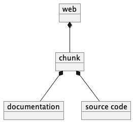
The Web chunks have the following two overall sets of features:
Program source code to be tangled and woven. There are two important varieties: the “defined” chunks that are named, and the “output” chunks that define a file to be written. Program code chunks can have references to other defined code chunks. This permits created output files that tangled into a compiler-friendly order, separate from the presentation.
Documentation to be woven. These are the blocks of text between commands.
The bulk of the file is typically documentation chunks that describe the program in some publication-oriented markup language like RST, HTML, or LaTeX.
py-web-tool markup surrounds the code with “commands.” Everything else is documentation.
The code chunks have two transformations applied.
When Tangling, the indentation is adjusted to match the context in which they were originally defined. This assures that Python (which relies on indentation) parses correctly. For other languages, proper indentation is expected but not required.
When Weaving, selected characters can be quoted so they don’t break the publication tool. For HTML,
&,<,>are quoted properly. For LaTeX, a few escapes are used to avoid problems with thefancyvrbenvironment.
The non-code, documentation chunks are not transformed up in any way. Everything that’s not explicitly a code chunk is output without modification.
All of the py-web-tool tags begin with @. This is sometimes called the command prefix.
(This can be changed.) The tags were historically referred to as “commands.”
For Python decorators in particular, the symbol must be doubled, @@, because
all @ symbols are commands, irrespective of context.
The Structural tags (historically called “major commands”) partition the input and define the various chunks. The Inline tags are (called “minor commands”) are used to control the woven and tangled output from the defined chunks. There are Content tags which generate summary cross-reference content in woven files.
Boilerplate¶
There is some mandatory “boilerplate” required to make a working document. Requirements vary by markup language.
LaTeX¶
The LaTeX templates use \\fancyvrb.
The following is required.
\\usepackage{fancyvrb}
Some minimal boilerplate document looks like this:
documentclass{article}
usepackage{fancyvrb}
title{ Title }
author{ Author }
begin{document}
maketitle
tableofcontents
Your Document Starts Here
end{document}
HTML¶
There’s often a fairly large amount of HTML boilerplate. Currently, the templates used do not provide any CSS classes. For more sophisticated HTML documents, it may be necessary to provide customized templates with CSS classes to make the document look good.
Additional Features¶
Sequence Numbers. The named chunks (from both @o and @d commands) are assigned
unique sequence numbers to simplify cross references.
Case Sensitive. Chunk names and file names are case sensitive.
Abbreviations. Chunk names can be abbreviated. A partial name can have a trailing ellipsis (…), this will be resolved to the full name. The most typical use for this is shown in the following example:
Some RST-format documentation.
@o myFile.py
@{
@<imports of the various packages used@>
print(math.pi,time.time())
@}
Some notes on the packages used.
@d imports...
@{
import math,time
@| math time
@}
Some more RST-format documentation.
This example shows five chunks.
An anonymous chunk of documentation.
A named chunk that tangles the
myFile.pyoutput. It has a reference to theimports of the various packages usedchunk. Note that the full name of the chunk is essentially a line of documentation, traditionally done as a comment line in a non-literate programming environment.An anonymous chunk of documentation.
A named chunk with an abbreviated name. The
imports...matches the nameimports of the various packages used. Set off after the@|separator is the list of user-specified identifiers defined in this chunk.An anonymous chunk of documentation.
Note that the first time a name appears (in a reference or definition), it must be the full name. All subsequent uses can be elisions. Also not that ambiguous elision is an annoying problem when you first start creating a document.
Concatenation. Named chunks are concatenated from their various pieces. This allows a named chunk to be broken into several pieces, simplifying the description. This is most often used when producing fairly complex output files.
An anonymous chunk with some RST documentation.
@o myFile.py
@{
import math, time
@}
Some notes on the packages used.
@o myFile.py
@{
print(math.pi, time.time())
@}
Some more HTML documentation.
This example shows five chunks.
An anonymous chunk of documentation.
A named chunk that tangles the
myFile.pyoutput. It has the first part of the file. In the woven document this is marked with"=".An anonymous chunk of documentation.
A named chunk that also tangles the
myFile.pyoutput. This chunk’s content is appended to the first chunk. In the woven document this is marked with"+=".An anonymous chunk of documentation.
Newline Preservation. Newline characters are preserved on input. Because of this the output may appear to have excessive newlines. In all of the above examples, each named chunk was defined with the following.
@{
import math, time
@}
This puts a newline character before and after the import line.
Controlling Indentation¶
We have two choices in indentation:
Context-Sensitive.
Consistent.
If we have context-sensitive indentation, then the indentation of a chunk reference is applied to the entire chunk when expanded in place of the reference. This makes it simpler to prepare source for languages (like Python) where indentation is important.
There are cases, however, when this is not desirable. There are some places in Python where we want to create long, triple-quoted strings with indentation that does not follow the prevailing indentations of the surrounding code.
Here’s how the context-sensitive indentation works.
@o myFile.py
@{
def aFunction(a, b):
@<body of aFunction@>
@| aFunction @}
@d body...
@{
"""doc string"""
return a + b
@}
The tangled output from this will look like the following.
All of the newline characters are preserved, and the reference to
body of the aFunction is indented to match the prevailing
indent where it was referenced. In the following example,
explicit line markers of ~ are provided to make the blank lines
more obvious.
~
~def aFunction(a, b):
~
~ """doc string"""
~ return a + b
~
[The @| command shows that this chunk defines the identifier aFunction.]
This leads to a difficult design choice.
Do we use context-sensitive indentation without any exceptions? This is the current implementation.
Do we use consistent indentation and require the author to get it right? This seems to make Python awkward, since we might indent our outdent a
@<name@>command, expecting the chunk to indent properly.Do we use context-sensitive indentation with an exception indicator? This seems to go against the utter simplicity we’re cribbing from noweb. However, it makes a great deal of sense to add an option for
@dchunks to supersede context-sensitive indentation. The author must then get it right.The syntax to define a section looks like this:
@d -noindent some chunk name
@{First partial line
More that uses """
@}
We might reference such a section like this.
@d some bigger chunk...
@{code
@<some chunk name@>
@}
This will include the -noindent section by resetting the contextual indentation
to zero. The First partial line line will be output after the four spaces
provided by the some bigger chunk context.
After the first newline (More that uses “””) will be at the left margin.
Tracking Source Line Numbers¶
Since the tangled output files are – well – tangled, it can be difficult to
trace back from a Python error stack to the original line in the .w file that
needs to be fixed.
To facilitate this, there is a two-step operation to get more detailed information on how tangling worked.
Use the -n command-line option to get line numbers.
Include comment indicators on the
@ocommands that define output files.
The expanded syntax for @o looks like this.
@o -start /* -end */ page-layout.css
@{
Some CSS code
@}
We’ve added two options: -start /* and -end */ which define comment
start and end syntax. This will lead to comments embedded in the tangled output
which contain source line numbers for every (every!) chunk.
Expression Context¶
There are two possible implementations for evaluation of a Python expression in the input.
Create an
ExpressionCommand, and append this to the currentChunk. This will allow evaluation during weave processing and during tangle processing. This makes the entire weave (or tangle) context available to the expression, including completed cross reference information.Evaluate the expression during input parsing, and append the resulting text as a
TextCommandto the currentChunk. This provides a common result available to both weave and parse, but the only context available is theWebReaderand the incompleteWeb, built up to that point.
In this implementation, we adopt the latter approach, and evaluate expressions immediately. A global context is created with the following variables defined.
- os.path:
This is the standard
os.pathmodule.- os.getcwd:
The complete
osmodule is not available. Just this function.- datetime:
This is the standard
datetimemodule.- time:
The standard
timemodule.- platform:
This is the standard
platformmodule.- __builtins__:
Most of the built-ins are available, too. Not all.
exec(),eval(),open()and__import__()aren’t available.- theLocation:
A tuple with the file name, first line number and last line number for the original expression’s location.
- theWebReader:
The
WebReaderinstance doing the parsing.- theFile:
The
.wfile being processed.- thisApplication:
The name of the running py-web-tool application. It may not be pyweb.py, if some other script is being used.
- __version__:
The version string in the py-web-tool application.
Architecture and Design Overview¶
This application breaks the overall problem of literate programming into the following sub-problems.
Representation of the WEB document as Chunks and Commands
Reading and parsing the input WEB document.
Weaving a document file.
Tangling the desired program source files.
Here’s the overall Context Diagram for this.
![left to right direction
skinparam actorStyle awesome
actor "Developer" as Dev
rectangle PyWeb {
usecase "Tangle Source" as UC_Tangle
usecase "Weave Document" as UC_Weave
}
rectangle IDE {
usecase "Create WEB" as UC_Create
usecase "Run Tests" as UC_Test
usecase "Build Documentation" as UC_Doc
usecase "Build Application" as UC_App
}
database WEB
component App
folder Documentation
Dev --> UC_Create
Dev --> UC_Test
Dev --> UC_Doc
Dev --> UC_App
UC_Create --> WEB
WEB --> UC_Tangle
WEB --> UC_Weave
UC_Tangle --> App
UC_Weave --> Documentation
UC_Test ..> UC_Tangle
UC_Doc ..> UC_Weave
UC_App ..> UC_Tangle](_images/plantuml-4c8ed7c9fa80955420fb7e1d1a646a6dca37f7fd.png)
The idea here is a central WEB document contains both the application source code and the documentation that describes the code. The documentation can present information in an order that’s meaningful and helpful to people; the tangling operation orders this for the benefit of compilers and tools.
Since this is often part of an Integrated Development Environment (IDE), the container for all of these software components is the developer’s desktop. (We don’t need a diagram for that.)
Here’s a summary of the application-level components. These are the most visible libraries and command-line applications.
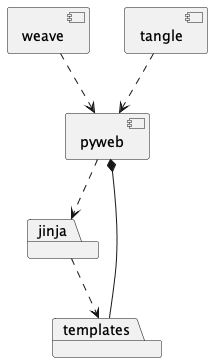
The weave and tangle are convenient
scripts that import and customize the underlying pyweb application.
We’ve used the dotted “depends-on” arrow to depict this.
The pyweb application depends on Jinja2 to define the various templates
for weaving the output documents.
The pyweb application contains the templates; this is shown
with a solid line.
We can modify the templates to alter the look and feel. The
supplied weave.py script shows how to do this.
In many cases, the final production will multiple steps, as shown below:
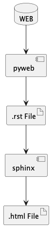
We can use pyweb-tool to create an .rst file
with the documentation. This is then processed by Sphinx
to inject a Sphinx theme and necessary CSS to make
responsive web document(s).
This is often automated with a Makefile.
Overall Structure¶
Generally, the code breaks into three functional areas
The core representation of a WEB.
A parser to read the source WEB.
The emitters to produce woven and tangled output, which include weavers and tanglers.
We could depict it as follows:
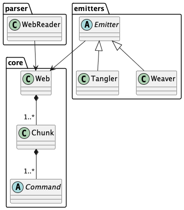
We’ll look at the core model, first.
Core WEB Representation¶
The basic structure has three layers, as shown in the following diagram:
![class Web << dataclass >> {
chunks: list[Chunk]
}
class Chunk {
name: str
commands: list[Command]
}
abstract class Command
Web *-- "1..*" Chunk
Chunk *-- "1..*" Command
class CodeChunk
Chunk <|-- CodeChunk
class NamedChunk
Chunk <|-- NamedChunk
class OutputChunk
Chunk <|-- OutputChunk
class NamedCodeChunk
Chunk <|-- NamedCodeChunk
class TextCommand
Command <|-- TextCommand
class CodeCommand
Command <|-- CodeCommand
class ReferenceCommand
Command <|-- ReferenceCommand
class XRefCommand
Command <|-- XRefCommand
class FileXRefCommand
XRefCommand <|-- FileXRefCommand
class MacroXRefCommand
XRefCommand <|-- MacroXRefCommand
class UseridXRefCommand
XRefCommand <|-- UseridXRefCommand](_images/plantuml-af6c5e3c3b745092f6451b2df5c1ecb6ef57c635.png)
The source document is transformed into a Web,
which is the overall container. The source is
decomposed into a sequence of Chunk instances. Each Chunk is a sequence
of Commands.
Chunk objects and Command objects cannot be nested, leading to delightful simplification.
The overall Web
includes both the original sequence of Chunk objects as well as an index for the named Chunk instances.
Note that a named chunk may be created through a number of @d commands.
This means that
each named Chunk may be a sequence of definitions sharing a common name.
They are concatenated in order to permit decomposing a single concept into sequentially described pieces.
The various layers of Web, Chunk, and Command each have attributes designed
to be usable by a Jinja template when weaving output. When tangling, however, the only
attribute that matters is the text contained in the @{ and @} brackets.
This makes tangling somewhat simpler than weaving.
There is a small interaction between a Tangler and each Chunk to work out the indentation.
based in the context in which a @< name @> reference occurs.
Reading and Parsing¶
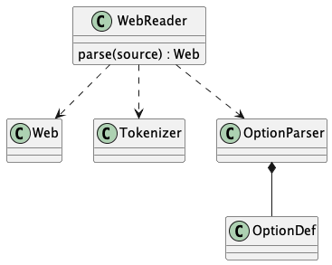
A solution to the reading and parsing problem depends on a convenient tool for breaking up the input stream and a representation for the chunks of input and the sequence of commands. Input decomposition is done with something we might call the Splitter design pattern.
The Splitter pattern is widely used in text processing, and has a long legacy in a variety of languages and libraries. A Splitter decomposes a string into a sequence of strings using some split pattern. There are many variant implementations. For example, one variant locates only a single occurence (usually the left-most); this is commonly implemented as a Find or Search string function. Another variant locates all occurrences of a specific string or character, and discards the matching string or character.
The variation on Splitter in this application creates each element in the resulting sequence as either (1) an instance of the split regular expression or (2) the text between split patterns.
We define our splitting pattern with the regular
expression '@.|\n'. This will split on either of these patterns:
@followed by a single character,or, a newline.
For the most part, \n is only text, and as almost no special significance. The exception is the
@i filename command, which ends at the end of the line, making the \n
significant syntax in this case.
We could be more specific with the following as a split pattern:
'@[doOifmu\|<>(){}\[\]]|\n'. This would silently ignore unknown commands,
merging them in with the surrounding text. This would leave the '@@' sequences
completely alone, allowing us to replace '@@' with '@' in
every text chunk. It’s not clear this additional level of detail is helpful.
Within the @d and @o commands, there is a name and options. These follow
the syntax rules for Tcl or the shell. Optional fields are prefaced with -.
All options must come before all positional arguments. The positional arguments
provide the name being defined. In effect, the name is ' '.join(args.split(' ');
this means multiple adjacent spaces in a name will be collapsed to a single space.
Emitters¶
There are two possible outputs:
A woven document.
One or more tangled source files.
The overall structure of the classes is shown in the following diagram.
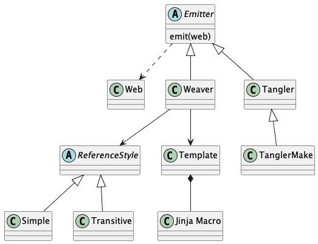
We’ll look at the weaving activity first, then the tangling activity.
Weaving¶
The weaving activity depends on having a target document markup language. There are several approaches to this problem.
We can use a markup language unique to py-web-tool. This would hide the final target markup language. It would mean that py-web-tool would be equivalent to a tool like Pandoc, producing a variety of target markup languages from a single, common source.
We can use any of the existing markup languages (HTML, RST, Markdown, LaTeX, etc.) expand snippets of markup into author-supplied markup to create the target woven document.
The problem with the first method is defining yet-another-markup-language. This seems needlessly complex.
The problem with the second method is the source WEB file is a mixture of the following two things:
The background document in some standard markup and
The code elements.
The code elements must be set off from the background text via some markup. In languages like RST and Markdown, there’s a small textual wrapper around code samples. In languages like HTML, the wrapper can be much more complex. Also, certain code characters may need to be properly escaped if the code sample happens to contain markup that should not be processed, but treated as literal text.
The author should not be foreced to repeat the wrappers around each code examples. This should be delegated to the literate programming tool. Further, the author should not be narrowly constrained by the markup injected by the weaving process; the weaver should be extensible to add features.
This leads to using the Facade design pattern. The weaver is a Facade over the Jinja template engine. The tool provides default templates in RST, HTML, and LaTeX. These can be replaced; new templates can be added. The templates used to wrap code sections can be tweaked relatively easily.
Tangling¶
The tangling activity produces output files. In other tools, some care was taken to understand the source code context for tangling, and provide a correct indentation. This required a command-line parameter to turn off indentation for languages like Fortran, where identation is not used.
In py-web-tool, there are two options. The default behavior is that the
indent of a @< name @> command is used to set the indent of the
material is expanded in place of this reference. If all @< commands are presented at the
left margin, no indentation will be done. This is helpful simplification,
particularly for users of Python, where indentation is significant.
In rare cases, we might need both, and a @d chunk can override the indentation
rule to force the material to be placed at the left margin.
Application¶
The overall application has the following layers to it:
An
Actionclass hierarchy that includes the actions of Load, Tangle, and Weave.An overall
Applicationclass that executes the actions.A top-level main function parses the command line, creates and configures the actions, and executes the sequence of actions.
The idea is that the Weaver Action should be visible to tools like PyInvoke.
We want Weave("someFile.w") to be a sensible task.
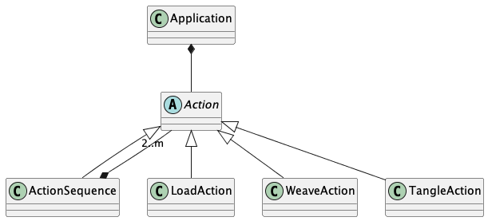
This shows the essential structure of the top-level classes.
Implementation¶
The implementation is contained in a single Python module defining
the all of the classes and functions, as well as an overall main() function. The main()
function uses these base classes to weave and tangle the output files.
The broad outline of the presentation is as follows:
Base Classes that define a model for the
.wfile.Web Class contains the overall Web of Chunks. A Web is a sequence of Chunk objects. It’s also a mapping from chunk name to definition.
Chunk Class Hierarchy are pieces of the source document, built into a Web. A
Chunkis a collection ofCommandinstances. This can be either an anonymous chunk that will be sent directly to the output, or a named chunks delimited by the structural@dor@ocommands.Command Class Hierarchy are the items within a
Chunk. The text and the inline@<name@>references are the principle command classes. Additionally, there are some cross reference commands (@f,@m, or@u).
Output Serialization. This is the
Emitterclass hierarchy writes various kinds of files. These decompose into two subclasses:A
Tanglercreates source code.A
Weavercreates documentation. The various Jinja-based templates are part of weaving.
Reference Strategy is a class hierarchy to define alternative ways to present cross-references among chunks. These support the
Weaversubclasses of theEmitters. We can have references resolved either transitively or simply. A transitive reference becomes a list of parentNamedChunkinstances. A simple reference is the referencedNamedChunk.
Input Parsing covers deserialization from the source
.wfile to the base model ofWeb,Chunk, andCommand.The WebReader class which parses the Web structure.
The Tokenizer class which tokenizes the raw input.
The Option Parser Class which tokenizes just the arguments to
@dand@ocommands.
Other application components:
Error Class defines an application-specific exception. This covers all of the various kinds of problems that might arise.
Action class hierarchy defines things this program does.
The Application class. This is an overall class definition that includes command line parsing, picking an Action, configuring and executing the Action. It could be a set of related functions, but we’ve bound them into a class.
Logging setup. This includes a simple context manager for logging.
pyWeb Module File defines the final module file that contains the application.
We’ll start with the base classes that define the data model for the source WEB of chunks.
Base Classes¶
Here are some of the base classes that define
the structure and meaning of a .w source file.
Base Class Definitions (1) =
→ Command class hierarchy -- used to describe individual commands in a chunk (10)
→ Chunk class hierarchy -- used to describe individual chunks (8)
→ Web class -- describes the overall "web" of chunks (3)∎ Base Class Definitions (1)
The above order is reasonably helpful for Python and minimizes forward
references. The Chunk, Command, and Web instances do have a circular relationship,
making a strict ordering a bit complex.
We’ll start at the central collection of information, the Web class of objects.
Web Class¶
The overall web of chunks is contained in a
single instance of the Web class that is the principle parameter for the weaving and tangling actions.
Broadly, the functionality of a Web can be separated into the folloowing areas:
It is constructed by a
WebReader.It also supports “enrichment” of the web, once all the
Chunkinstances are known. This is a stateful update to the web. EachChunkis updated with references it makes as well as references to it.It supports
Chunkcross-reference methods that traverse this enriched data. This includes a kind of validity check to be sure that everything is used once and once only.
Fundamentally, a Web is a hybrid list+mapping. It as the following features:
It’s a
Sequenceto retain allChunkinstances in order.It’s a mapping of name-to-Chunk that also offers a moderately sophisticated lookup, including exact match for a
Chunkname and an approximate match for a an abbreviated name.
The Web is built by the parser by loading the sequence of Chunk instances.
Note that the WEB source language has a “mixed content model”. This means the code chunks have specific tags with names. The text, on the other hand, is interspersed among the code chunks. The text belongs to implicit, unnamed text chunks.
A web instance has a number of attributes.
- chunks:
the sequence of
Chunkinstances as seen in the input file. To support anonymous chunks, and to assure that the original input document order is preserved, we keep all chunks in a master sequential list.- files:
the
@onamedOutputChunkchunks. Each element of this dictionary is a sequence of chunks that have the same name. The first is the initial definition (marked with “=”), all others a second definitions (marked with “+=”).- macros:
the
@dnamedNamedChunkchunks. Each element of this dictionary is a sequence of chunks that have the same name. The first is the initial definition (marked with “=”), all others a second definitions (marked with “+=”).- userids:
the cross reference of chunks referenced by commands in other chunks.
This relies on the way a @dataclass does post-init processing.
One the raw sequence of Chunks has been presented, some additional
processing is done to link each Chunk to the web. This permits
the full_name property to expand abbreviated names to full names,
and, consequently, chunk references.
Imports (2) =
from collections import defaultdict
from collections.abc import Iterator
from dataclasses import dataclass, field
from functools import cache
import logging
from pathlib import Path
from types import SimpleNamespace
from typing import Any, Optional, Literal, ClassVar, Union
from weakref import ref, ReferenceType
∎ Imports (2)
The class defines one visible element of a Web instance,
the chunks list of Chunk instances. From this list of
Chunk objects, the remaining internal objects are built.
These include the following:
chunk_maphas the mapping of chunk names to list of chunks that provide the definition for the chunk.userid_maphas the mapping of user-defined names to the list of chunks that define the name.referencesis the set of all referenced chunks.
Additionally there are attributes to contain a logger, a reference to the WEB file path, used to evaluate expressions, and a “strict-match” option that can report errors during name resolution. Disabling this will allow documents to be tangled that are potentially incomplete.
Generally, a parser will create a list of Chunk objects. From this, the
parser can creates the final Web.
Web class – describes the overall “web” of chunks (3) =
@dataclass
class Web:
chunks: list["Chunk"] #: The source sequence of chunks.
# The ``@d`` chunk names and locations where they're defined.
chunk_map: dict[str, list["Chunk"]] = field(init=False)
# The ``@|`` defined names and chunks with which they're associated.
userid_map: defaultdict[str, list["Chunk"]] = field(init=False)
logger: logging.Logger = field(init=False, default=logging.getLogger("Web"))
web_path: Path = field(init=False) #: Source WEB file; set by ```WebParse``
strict_match: ClassVar[bool] = True #: Report ... names without a definition.∎ Web class – describes the overall “web” of chunks (3)
The __post_init__() special method populates the detailed structure of the WEB document.
There are several passes through the WEB to digest the data:
Set all
ChunkandCommandback references to theWebcontainer. This is required so aChunkwith aReferenceCommandinstance can properly refer to a chunk elsewhere in theWebcontainer. There are all weak references to faciliate garbgage collection.Locate the unabbreviated names in chunks and references to chunks. Names can found in two places. The
@dcommand provides a name. A@<name@>command can also provide a reference to a name. The unabbreviated names define the structure. Unambiguous abbreviations can be used freely, since full names are located first.Accumulate chunk lists, output lists, and name definition lists. This pass does two things. First any user-defined name after a
@|command is accumulated. Second, any abbreviated name is resolved to the full name, and the complete mapping from chunk name to a sequence of defining chunks is completed.Set the
referencedByattribute of aChunkinstance with all of the commands that point to it. The idea here is that a top-levelChunkinstance may have references to otherChunkisntances. This forms a kind of tree. Any given low-levelChunkobject is named by a sequence of parentChunkobjects.
Once the initialization is complete, the Web instance can be woven or tangled.
Web class – describes the overall “web” of chunks (4) +=
def __post_init__(self) -> None:
"""
Populate weak references throughout the web to make full_name properties work.
Then. Locate all macro definitions and userid references.
"""
# Pass 1 -- set all Chunk and Command back references.
for c in self.chunks:
c.web = ref(self)
for cmd in c.commands:
cmd.web = ref(self)
# Named Chunks = Union of macro_iter and file_iter
named_chunks = list(filter(lambda c: c.name is not None, self.chunks))
# Pass 2 -- locate the unabbreviated names in chunks and references to chunks.
self.chunk_map = {}
for seq, c in enumerate(named_chunks, start=1):
c.seq = seq
if not c.path:
# Use ``@d name`` chunks (reject ``@o`` and text)
if c.name and not c.name.endswith('...'):
self.logger.debug(f"__post_init__ 2a {c.name=!r}")
self.chunk_map.setdefault(c.name, [])
for cmd in c.commands:
# Find ``@< name @>`` in ``@d name`` chunks or ``@o`` chunks
if cmd.has_name:
if not cast(ReferenceCommand, cmd).name.endswith('...'):
self.logger.debug(f"__post_init__ 2b {cast(ReferenceCommand, cmd).name=!r}")
self.chunk_map.setdefault(cast(ReferenceCommand, cmd).name, [])
# Pass 3 -- accumulate chunk lists, output lists, and name definition lists.
self.userid_map = defaultdict(list)
for c in named_chunks:
for name in c.def_names:
self.userid_map[name].append(c)
if not c.path:
# Named ``@d name`` chunks
if full_name := c.full_name:
c.initial = len(self.chunk_map[full_name]) == 0
self.chunk_map[full_name].append(c)
self.logger.debug(f"__post_init__ 3 {c.name=!r} -> {c.full_name=!r}")
else:
# Output ``@o`` and anonymous chunks.
# Assume all @o chunks are unique. If they're not, they overwrite each other.
# Also, there's not ``full_name`` for these chunks.
c.initial = True
# TODO: Accumulate all chunks that contribute to a named file...
# Pass 4 -- set referencedBy a command in a chunk.
# NOTE: Assuming single references *only*
# We should raise an exception when updating a non-None referencedBy value.
# Or incrementing ref_chunk.references > 1.
for c in named_chunks:
for cmd in c.commands:
if cmd.has_name:
ref_to_list = self.resolve_chunk(cast(ReferenceCommand, cmd).name)
for ref_chunk in ref_to_list:
ref_chunk.referencedBy = c
ref_chunk.references += 1∎ Web class – describes the overall “web” of chunks (4)
The representation of a Web instance is a sequence of Chunk instances.
This can be long and difficult to read. It is, however, complete, and can be
used to build instances of Web objects from a variety of sources.
Web class – describes the overall “web” of chunks (5) +=
def __repr__(self) -> str:
NL = ",\n"
return (
f"{self.__class__.__name__}("
f"{NL.join(repr(c) for c in self.chunks)}"
f")"
)∎ Web class – describes the overall “web” of chunks (5)
Name and Chunk resolution are similar. Name resolution provides only the expanded name. Chunk resolution provides the list of chunks that define a name. Chunk resolution expands on the basic features of Name resolution.
The complex target.endswith('...') processing only happens once
during __post_init__() processing. After the initalization is complete,
all ReferenceCommand objects will have a full_name attribute
that avoids the complication of resolving a name with a ... ellipsis.
Web class – describes the overall “web” of chunks (6) +=
def resolve_name(self, target: str) -> str:
"""Map short names to full names, if possible."""
if target in self.chunk_map:
# self.logger.debug(f"resolve_name {target=} in self.chunk_map")
return target
elif target.endswith('...'):
# The ... is equivalent to regular expression .*
matches = list(
c_name
for c_name in self.chunk_map
if c_name.startswith(target[:-3])
)
match : str
# self.logger.debug(f"resolve_name {target=} {matches=} in self.chunk_map")
match matches:
case []:
if self.strict_match:
raise Error(f"No full name for {target!r}")
else:
self.logger.warning(f"resolve_name {target=} unknown")
self.chunk_map[target] = []
match = target
case [head]:
match = head
case [head, *tail]:
message = f"Ambiguous abbreviation {target!r}, matches {[head] + tail!r}"
raise Error(message)
return match
else:
self.logger.warning(f"resolve_name {target=} unknown")
self.chunk_map[target] = []
return target
def resolve_chunk(self, target: str) -> list["Chunk"]:
"""Map name (short or full) to the defining sequence of chunks."""
full_name = self.resolve_name(target)
chunk_list = self.chunk_map[full_name]
self.logger.debug(f"resolve_chunk {target=!r} -> {full_name=!r} -> {chunk_list=}")
return chunk_list∎ Web class – describes the overall “web” of chunks (6)
The point of the Web object is to be able to manage a variety of
structures. These iterator methods and properties provide the list of
@o chunks, @d chunks, and the usernames after @| in a chunk.
Additionally, we can confirm the overall structure by asserting
that each @d name has one reference. A name with no references
indicates an omission, a name with multiple references suggests a spelling
or ellipsis problem.
Web class – describes the overall “web” of chunks (7) +=
def file_iter(self) -> Iterator[OutputChunk]:
return (cast(OutputChunk, c) for c in self.chunks if c.type_is("OutputChunk"))
def macro_iter(self) -> Iterator[NamedChunk]:
return (cast(NamedChunk, c) for c in self.chunks if c.type_is("NamedChunk"))
def userid_iter(self) -> Iterator[SimpleNamespace]:
yield from (SimpleNamespace(def_name=n, chunk=c) for c in self.file_iter() for n in c.def_names)
yield from (SimpleNamespace(def_name=n, chunk=c) for c in self.macro_iter() for n in c.def_names)
@property
def files(self) -> list["OutputChunk"]:
return list(self.file_iter())
@property
def macros(self) -> list[SimpleNamespace]:
"""
The chunk_map has the list of Chunks that comprise a macro definition.
We separate those to make it slightly easier to format the first definition.
"""
first_list = (
(self.chunk_map[name][0], self.chunk_map[name])
for name in sorted(self.chunk_map)
if self.chunk_map[name]
)
macro_list = list(
SimpleNamespace(name=first_def.name, full_name=first_def.full_name, seq=first_def.seq, def_list=def_list)
for first_def, def_list in first_list
)
# self.logger.debug(f"macros: {defs}")
return macro_list
@property
def userids(self) -> list[SimpleNamespace]:
userid_list = list(
SimpleNamespace(userid=userid, ref_list=self.userid_map[userid])
for userid in sorted(self.userid_map)
)
# self.logger.debug(f"userids: {userid_list}")
return userid_list
def no_reference(self) -> list[Chunk]:
return list(filter(lambda c: c.name and not c.path and c.references == 0, self.chunks))
def multi_reference(self) -> list[Chunk]:
return list(filter(lambda c: c.name and not c.path and c.references > 1, self.chunks))∎ Web class – describes the overall “web” of chunks (7)
A Web instance is built by a WebReader.
It’s used by an Emitter, including a Weaver as well as a Tangler.
A Web is composed of individual Chunk instances.
Chunk Class Hierarchy¶
A Chunk is a piece of the input file. It is a collection of Command instances.
A Chunk can be woven or tangled to create output.
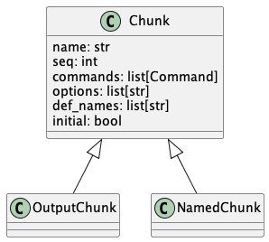
These subclasss reflect three kinds of content in the WEB source document:
Chunkis the anonymous text context.The body generally becomes a
TextCommand. Also, the various XREF commands (@m,@f,@u) can only appear here. In principle, a@< reference @>can appear in text. It must name a@d name @[...@]NamedDocumentChunk, which is expanded in place, not linked.
OutputChunkis the@ocontext.The body becomes a
CodeCommand. Any@< reference @>will be expanded when tangling, but become a link when weaving. This defines an output file.
NamedChunkis the@dcontext.The body becomes a
CodeCommand. Any@< reference @>will be expanded when tangling, but become a link when weaving.
Most of the attributes are pushed up to the superclass. This makes type checking the complex WEB tree much simpler.
The attributes are visible to the Jinja templates. In particular the sequence number, seq,
and the initial definition indicator, initial, are often used to customize presentation of the
woven content.
A type_is() method is used to discern the various subtypes. This slightly simplifies
the work done by a template. It’s not easy to rely on proper inheritance because the templates
are implemented in a separate language with their own processing rules.
Chunk class hierarchy – used to describe individual chunks (8) =
@dataclass
class Chunk:
"""Superclass for OutputChunk, NamedChunk, NamedDocumentChunk.
"""
#: Short name of the chunk.
name: str | None = None
#: Unique sequence number of chunk in the WEB.
seq: int | None = None
#: Sequence of commands inside this chunk.
commands: list["Command"] = field(default_factory=list)
#: Parsed options for @d and @o chunks.
options: list[str] = field(default_factory=list)
#: Names defined after ``@|`` in this chunk.
def_names: list[str] = field(default_factory=list)
#: Is this the first use of a given Chunk name?
initial: bool = False
#: If injecting location details whenm tangling, this is the comment prefix.
comment_start: str | None = None
#: If injecting location details, this is the comment suffix.
comment_end: str | None = None
#: Count of references to this Chunk.
references: int = field(init=False, default=0)
#: Reference to this chunk.
referencedBy: Optional["Chunk"] = field(init=False, default=None)
#: Weak reference to the ``Web`` containing this ``Chunk``.
web: ReferenceType["Web"] = field(init=False, repr=False)
#: Logger for any chunk-specific messages.
logger: logging.Logger = field(init=False, default=logging.getLogger("Chunk"))
@property
def full_name(self) -> str | None:
if self.name:
return cast(Web, self.web()).resolve_name(self.name)
else:
return None
@property
def path(self) -> Path | None:
return None
@property
def location(self) -> tuple[str, int]:
return self.commands[0].location
def type_is(self, name: str) -> bool:
"""
Instead of type name matching, we could check for these features:
- has_code() (i.e., NamedChunk and OutputChunk)
- has_text() (i.e., Chunk and NamedDocumentChunk)
"""
return self.__class__.__name__ == name∎ Chunk class hierarchy – used to describe individual chunks (8)
The subclasses do little more than partition thd Chunks in a way that permits customization in the template rendering process.
An OutputChunk is distinguished from a NamedChunk by having
a path property and not having a full_name property.
Chunk class hierarchy – used to describe individual chunks (9) +=
class OutputChunk(Chunk):
@property
def path(self) -> Path | None:
if self.name:
return Path(self.name)
else:
return None
@property
def full_name(self) -> str | None:
return None
class NamedChunk(Chunk):
pass
class NamedChunk_Noindent(Chunk):
pass
class NamedDocumentChunk(Chunk):
pass∎ Chunk class hierarchy – used to describe individual chunks (9)
Command Class Hierarchy¶
A Chunk is a sequence of Command instances. For the generic Chunk superclass,
the commands are – mostly – the TextCommand subclass of Command.
These are blocks of text. A Chunk may also include some XRefCommand instances
which expand to cross-reference material for an index.
For the CodeChunk and NamedChunk subclasses, the commands are
CodeCommand instances intermixed with ReferenceCommand instances.
A CodeCommand has a wrapper when weaving. Additionally, it will tangled
into the output. A ReferenceCommand becomes a link when weaving, and expands
to it’s full body when being tangled.
![class Chunk {
name: str
commands: list[Command]
}
abstract class Command {
{static} has_name: bool
{static} has_text: bool
{static} typeid: TypeId
text: str
tangle(Tangler, Target)
}
Chunk *-- "1..*" Command
abstract HasText
Command <|-- HasText
class TextCommand
HasText <|-- TextCommand
class CodeCommand
HasText <|-- CodeCommand
class ReferenceCommand
Command <|-- ReferenceCommand
abstract XRefCommand
Command <|-- XRefCommand
class FileXRefCommand
XRefCommand <|-- FileXRefCommand
class MacroXRefCommand
XRefCommand <|-- MacroXRefCommand
class UseridXRefCommand
XRefCommand <|-- UseridXRefCommand
class TypeId {
__getattr__(str) : bool
}
Command -- TypeId](_images/plantuml-fae6df9bf8cb355e39c19c6987c8cc7be8d16732.png)
Each of these variants has the possibility of distinct processing
when weaving the final document. The type information must be
visibile to the Jinja template processing. This is done
through an instance of the TypeId class attached
to each of these classes.
The input stream is broken into individual commands, based on the
various @x strings in the file. There are several subclasses of Command,
each used to describe a different command or block of text in the input.
All instances of the Command class are created by the WebReader instance.
In this case, a WebReader can be thought of as a factory for Command instances.
Each Command instance is appended to the sequence of commands that
belong to a Chunk.
This model permits two kinds of serialization:
Weaving a document from the WEB source file. This uses the various attributes of the various subclasses.
Tangling target documents with code. This relies on a
tangle()method in each subclass.
We’ll address the run-time type identification first,
the the definitions of the various Command subclasses.
Command class hierarchy – used to describe individual commands in a chunk (10) =
→ The TypeId Class -- to help the template engine (12)
→ The Command Abstract Base Class (13)
→ The HasText Type Hint -- used instead of another abstract class (14)
→ The TextCommand Class (15)
→ The CodeCommand Class (16)
→ The ReferenceCommand Class (17)
→ The XrefCommand Subclasses -- files, macros, and user names (18)∎ Command class hierarchy – used to describe individual commands in a chunk (10)
The TypeId Class¶
The TypeId class provides run-time type
identification to the Jinja templates. The idea is object.typeid.AClass is
equivalent to isinstance(object, pyweb.AClass). It has simpler syntax
and works better with Jinja templates. It helps sort out the various nodes of the AST
built from the source WEB document.
There are three parts to the TypeId implementation:
A
TypeIdclass definition to handle the attribute access. A reference toobject.typeid.Nameevaluates__getattr__(object, 'Name').A metaclass definition,
TypeIdMeta, to inject the newtypeidattribute into each class.The normal class initialization process, which evaluates
__set_name__()for each attribute of a class that defines the method. This provides the containing class to theTypeIdinstance.
The idea of run-time type identification is – in a way – a failure to properly
define the classes to follow the Liskov Substitution design principle. A better
design would check for specific features of a subclass of Command.
This becomes awkwardly complex in the Jinja templates, because the templates exist
outside the class hierarchy. We rely on the typeid to map classes to macros appropriate to the class.
Imports (11) +=
from typing import TypeGuard, TypeVar, Generic
∎ Imports (11)
The TypeId Class – to help the template engine (12) =
_T = TypeVar("_T")
class TypeId:
"""
This makes a given class name into an attribute with a
True value. Any other attribute reference will return False.
>>> class A:
... typeid = TypeId()
>>> a = A()
>>> a.typeid.A
True
>>> a.typeid.B
False
"""
def __set_name__(self, owner: type[_T], name: str) -> "TypeId":
self.my_class = owner
return self
def __getattr__(self, item: str) -> TypeGuard[_T]:
return self.my_class.__name__ == item
from collections.abc import Mapping
class TypeIdMeta(type):
"""Inject the ``typeid`` attribute into a class definition."""
@classmethod
def __prepare__(metacls, name: str, bases: tuple[type, ...], **kwds: Any) -> Mapping[str, object]: # type: ignore[override]
return {"typeid": TypeId()}∎ The TypeId Class – to help the template engine (12)
The TypeIdMeta metaclass sets the typeid attribute of each class defined by this metaclass.
The ordinary class preparation will invoke
the __set_name__() special method to provide details to the attribute.
Once set, any reference to c.typeid.name will be evaluated as __getattr__(c, 'name').
This permits the typeid to compare the name provided by __set_name__() with the name
being inquired about.
The Command Class¶
The Command class is abstract, and describes
most of the features of the various subclasses.
The Command Abstract Base Class (13) =
class Command(metaclass=TypeIdMeta):
typeid: TypeId
has_name: TypeGuard["ReferenceCommand"] = False
has_text: TypeGuard[Union["CodeCommand", "TextCommand"]] = False
def __init__(self, location: tuple[str, int]) -> None:
self.location = location #: The (filename, line number)
self.logger = logging.getLogger(self.__class__.__name__)
self.web: ReferenceType["Web"]
self.text: str #: The body of this command
def __repr__(self) -> str:
return f"{self.__class__.__name__}(location={self.location!r})"
@abc.abstractmethod
def tangle(self, aTangler: "Tangler", target: TextIO) -> None:
...∎ The Command Abstract Base Class (13)
The HasText Classes¶
A type hint summarizes some of the subclass relationships.
The HasText Type Hint – used instead of another abstract class (14) =
HasText = Union["CodeCommand", "TextCommand"]
∎ The HasText Type Hint – used instead of another abstract class (14)
We don’t formalize this as proper subclass definitions. We probably should, but it doesn’t seem to add any clarity.
The TextCommand Class¶
The TextCommand class describes all of the text outside the @d and @o
chunks. These are not tangled, and an exception is raised.
The TextCommand Class (15) =
class TextCommand(Command):
"""Text outside any other command."""
has_text: TypeGuard[Union["CodeCommand", "TextCommand"]] = True
def __init__(self, text: str, location: tuple[str, int]) -> None:
super().__init__(location)
self.text = text #: The text
def tangle(self, aTangler: "Tangler", target: TextIO) -> None:
message = f"attempt to tangle a text block {self.location} {shorten(self.text, 32)!r}"
self.logger.error(message)
raise Error(message)
def __repr__(self) -> str:
return f"{self.__class__.__name__}(text={self.text!r}, location={self.location!r})"∎ The TextCommand Class (15)
The CodeCommand Class¶
The CodeCommand class describes the text inside the @d and @o
chunks. These are tangled without change.
The CodeCommand Class (16) =
class CodeCommand(Command):
"""Code inside a ``@o``, or ``@d`` command."""
has_text: TypeGuard[Union["CodeCommand", "TextCommand"]] = True
def __init__(self, text: str, location: tuple[str, int]) -> None:
super().__init__(location)
self.text = text #: The text
def tangle(self, aTangler: "Tangler", target: TextIO) -> None:
self.logger.debug(f"tangle {self.text=!r}")
aTangler.codeBlock(target, self.text)
def __repr__(self) -> str:
return f"{self.__class__.__name__}(text={self.text!r}, location={self.location!r})"∎ The CodeCommand Class (16)
The ReferenceCommand Class¶
The ReferenceCommand class describes a @< name @> construct inside a chunk.
When tangled, these lead to inserting the referenced chunk’s content.
Because this a reference to another chunk, the properties provide
the values for the other chunk.
The ReferenceCommand Class (17) =
class ReferenceCommand(Command):
"""
Reference to a ``NamedChunk`` in code, a ``@< name @>`` construct.
In a CodeChunk or OutputChunk, it tangles to the definition from a ``NamedChunk``.
In text, it can weave to the text of a ``NamedDocumentChunk``.
"""
has_name: TypeGuard["ReferenceCommand"] = True
def __init__(self, name: str, location: tuple[str, int]) -> None:
super().__init__(location)
self.name = name #: The name that is referenced.
@property
def full_name(self) -> str:
return cast(Web, self.web()).resolve_name(self.name)
@property
def seq(self) -> int | None:
return cast(Web, self.web()).resolve_chunk(self.name)[0].seq
def tangle(self, aTangler: "Tangler", target: TextIO) -> None:
"""Expand this reference.
The starting position is the indentation for all **subsequent** lines.
Provide the indent before ``@<``, in ``tangler.fragment`` back to the tangler.
"""
self.logger.debug(f"tangle reference to {self.name=}, context: {aTangler.fragment=}")
chunk_list = cast(Web, self.web()).resolve_chunk(self.name)
if len(chunk_list) == 0:
message = f"Attempt to tangle an undefined Chunk, {self.name!r}"
self.logger.error(message)
raise Error(message)
aTangler.reference_names.add(self.name)
aTangler.addIndent(len(aTangler.fragment))
aTangler.fragment = ""
for chunk in chunk_list:
# TODO: if chunk.options includes '-indent': do a setIndent before tangling.
for command in chunk.commands:
command.tangle(aTangler, target)
aTangler.clrIndent()
def __repr__(self) -> str:
return f"{self.__class__.__name__}(name={self.name!r}, location={self.location!r})"∎ The ReferenceCommand Class (17)
The XrefCommand Classes¶
The XRefCommand classes describes a @f, @m, and @u constructs inside a chunk.
These are not Tangled. They’re only woven.
Each offers a unique property that can be used by the template rending to get data about the WEB content.
The XrefCommand Subclasses – files, macros, and user names (18) =
class FileXrefCommand(Command):
"""The ``@f`` command."""
def __init__(self, location: tuple[str, int]) -> None:
super().__init__(location)
@property
def files(self) -> list["OutputChunk"]:
return cast(Web, self.web()).files
def tangle(self, aTangler: "Tangler", target: TextIO) -> None:
raise Error('Illegal tangling of a cross reference command.')
class MacroXrefCommand(Command):
"""The ``@m`` command."""
def __init__(self, location: tuple[str, int]) -> None:
super().__init__(location)
@property
def macros(self) -> list[SimpleNamespace]:
return cast(Web, self.web()).macros
def tangle(self, aTangler: "Tangler", target: TextIO) -> None:
raise Error('Illegal tangling of a cross reference command.')
class UserIdXrefCommand(Command):
"""The ``@u`` command."""
def __init__(self, location: tuple[str, int]) -> None:
super().__init__(location)
@property
def userids(self) -> list[SimpleNamespace]:
return cast(Web, self.web()).userids
def tangle(self, aTangler: "Tangler", target: TextIO) -> None:
raise Error('Illegal tangling of a cross reference command.')∎ The XrefCommand Subclasses – files, macros, and user names (18)
Output Serialization¶
The Emitter class hierarchy writes the output from the source Web instance.
An Emitter instance is responsible for control of an output file format.
This includes the necessary file naming, opening, writing and closing operations.
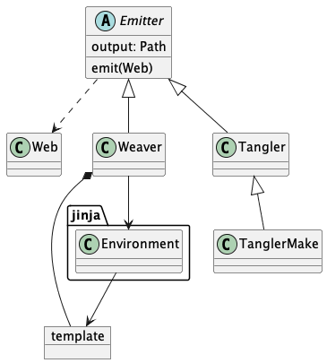
Here’s how the definitions are provided in the application.
The two reference class definitions are used by by the Emitter class, and needs to be defined first.
We’ll look at them later, since they’re a tiny strategy change in how cross-references
are displayed.
Base Class Definitions (19) +=
→ Reference class hierarchy - strategies for weaving references to a chunk (33)
→ Emitter Superclass (21)
→ Weaver Subclass -- Uses Jinja templates to weave documentation (22)
→ Tangler Subclass -- emits the output files (28)
→ TanglerMake Subclass -- extends Tangler to avoid touching files that didn't change (32)∎ Base Class Definitions (19)
Imports (20) +=
import abc
from textwrap import dedent, shorten
from jinja2 import Environment, DictLoader, select_autoescape∎ Imports (20)
The Emitter class is an abstraction, used to check the consistency
of the subclasses.
Emitter Superclass (21) =
class Emitter(abc.ABC):
def __init__(self, output: Path):
self.logger = logging.getLogger(self.__class__.__qualname__)
self.log_indent = logging.getLogger("indent." + self.__class__.__qualname__)
self.output = output
@abc.abstractmethod
def emit(self, web: Web) -> None:
pass∎ Emitter Superclass (21)
The Weaver Subclass¶
The Weaver is a Facade that wraps Jinja template processing.
The job is to build the necessary environment, locate the templates,
and then evaluate the template’s generate() method to fill the values
into the template to create the woven document.
There’s “base_weaver” template that contains the essential structure of the output document. This creates the needed macros, and then weaves the various chunks, in order.
Each unique markup language has macros that provide the unique markup required for the various chunks. This permits customization of the markup.
We have an interesting wrinkle with RST-formatted output. There are two variants that may be important:
When used with Sphinx, the “small” caption at the end of a code block uses
.. rst-class:: small.When used without Sphinx, i.e., native docutils, the the “small” caption at the end of a code block uses
.. class:: small.
This is a minor change to the template being used. The question is how to make that distinction
in the weaver? One view is to use subclasses of Weaver for this.
However, the templates are found by name in the template_map within the Weaver.
The --weaver command-line option provides the string (e.g., rst or html) used
to build a key into the template map.
We can, therefore, use the --weaver command-line option to provide an expanded set of names for RST processing.
-w rstis the Sphinx option.-w rst-sphinxis an alias forrst. The dictionary key points to the same templates asrst.-w rst-nosphinxis the “pure-docutils” version, using.. class::.-w rst-docutilsis an alias for the nosphinx option.
While this works out nicely, it turns out that the .. container:: small is, perhaps, a better
markup that .. class:: small. This work in docutils and Sphinx.
Weaver Subclass – Uses Jinja templates to weave documentation (22) =
→ Debug Templates -- these display debugging information (23)
→ RST Templates -- the default weave output (24)
→ HTML Templates -- emit HTML weave output (25)
→ LaTeX Templates -- emit LaTeX weave output (26)
→ Common base template -- this is used for ALL weaving (27)
class Weaver(Emitter):
template_map = {
"debug_defaults": debug_weaver_template, "debug_macros": "",
"rst_defaults": rst_weaver_template, "rst_macros": rst_overrides_template,
"html_defaults": html_weaver_template, "html_macros": html_overrides_template,
"tex_defaults": latex_weaver_template, "tex_macros": tex_overrides_template,
"rst-sphinx_defaults": rst_weaver_template, "rst-sphinx_macros": rst_overrides_template,
"rst-nosphinx_defaults": rst_weaver_template, "rst-nosphinx_macros": rst_nosphinx_template,
"rst-docutils_defaults": rst_weaver_template, "rst-docutils_macros": rst_nosphinx_template,
}
quote_rules = {
"rst": rst_quote_rules,
"html": html_quote_rules,
"tex": latex_quote_rules,
"debug": debug_quote_rules,
}
def __init__(self, output: Path = Path.cwd()) -> None:
super().__init__(output)
# Summary
self.linesWritten = 0
def set_markup(self, markup: str = "rst") -> "Weaver":
self.markup = markup
return self
def emit(self, web: Web) -> None:
self.target_path = (self.output / web.web_path.name).with_suffix(f".{self.markup}")
self.logger.info("Weaving %s using %s markup", self.target_path, self.markup)
with self.target_path.open('w') as target_file:
for text in self.generate_text(web):
self.linesWritten += text.count("\n")
target_file.write(text)
def generate_text(self, web: Web) -> Iterator[str]:
self.env = Environment(
loader=DictLoader(
self.template_map |
{'base_weaver': base_template,}
),
autoescape=select_autoescape()
)
self.env.filters |= {
"quote_rules": self.quote_rules[self.markup]
}
defaults = self.env.get_template(f"{self.markup}_defaults")
macros = self.env.get_template(f"{self.markup}_macros")
template = self.env.get_template("base_weaver")
return template.generate(web=web, macros=macros, defaults=defaults)∎ Weaver Subclass – Uses Jinja templates to weave documentation (22)
There are several strategy plug-ins. Each is unique for a particular flavort of markup. These include the quoting function used to escape markup characters, and the templates used.
The objective is to have a generic “weaver” template which includes three levels of template definition:
Defaults.
Configured overrides, perhaps from
pyweb.toml.Document overrides from the
.wfile in@t name @{...@}commands.
This means there is a two-step binding between document and macros.
The base weaver document should import three generic template definitions:
{%- from 'markup' import * %}{%- from 'configured' import * %}{%- from 'document' import * %}- These names map (somehow) to specific templates based on markup language.
markup->rst/markup, etc.
This allows us to provide all templates and make a final binding at weave time. We can use a prefix loader with a given prefix. Some kind of “import rst/markup as markup” would be ideal.
Jinja, however, doesn’t seem to support this the same way Python does.
There’s no import as construct allowing very late binding.
The alternative is to create the environment very late in the process, once we have all the information available. We can then pick the templates to put into a DictLoader to support the standard weaving structure.
The quoting rules apply to the various template languages. The idea is that a few characters must be escaped for proper presentation in the code sample sections.
Debug Template¶
Debug Templates – these display debugging information (23) =
def debug_quote_rules(text: str) -> str:
return repr(text)
debug_weaver_template = dedent("""\
{%- macro text(command) -%}
text: {{command}}
{%- endmacro -%}
{%- macro begin_code(chunk) %}
begin_code: {{chunk}}
{%- endmacro -%}
{%- macro code(command) %}
code: {{command}}
{%- endmacro -%}
{%- macro ref(id) %}
ref: {{id}}
{%- endmacro -%}
{%- macro end_code(chunk) %}
end_code: {{chunk}}
{% endmacro -%}
{%- macro file_xref(command) -%}
file_xref {{command.files}}
{%- endmacro -%}
{%- macro macro_xref(command) -%}
macro_xref {{command.macros}}
{%- endmacro -%}
{%- macro userid_xref(command) -%}
userid_xref {{command.userids}}
{%- endmacro -%}
""")∎ Debug Templates – these display debugging information (23)
RST Template¶
The RST Templates produce ReStructuredText for the various web commands. Note that code lines must be indented when using this markup.
RST Templates – the default weave output (24) =
def rst_quote_rules(text: str) -> str:
quoted_chars = [
('\\', r'\\'), # Must be first.
('`', r'\`'),
('_', r'\_'),
('*', r'\*'),
('|', r'\|'),
]
clean = text
for from_, to_ in quoted_chars:
clean = clean.replace(from_, to_)
return clean
rst_weaver_template = dedent("""
{%- macro text(command) -%}
{{command.text}}
{%- endmacro -%}
{%- macro begin_code(chunk) %}
.. _`{{chunk.full_name or chunk.name}} ({{chunk.seq}})`:
.. rubric:: {{chunk.full_name or chunk.name}} ({{chunk.seq}}) {% if chunk.initial %}={% else %}+={% endif %}
.. parsed-literal::
:class: code
{% endmacro -%}
{# For RST, each line must be indented. #}
{%- macro code(command) %}{% for line in command.text.splitlines() %} {{line | quote_rules}}
{% endfor -%}{% endmacro -%}
{%- macro ref(id) %} \N{RIGHTWARDS ARROW} `{{id.full_name}} ({{id.seq}})`_{% endmacro -%}
{# When using Sphinx, this *could* be rst-class::, pure docutils uses container::#}
{%- macro end_code(chunk) %}
..
.. container:: small
\N{END OF PROOF} *{{chunk.full_name or chunk.name}} ({{chunk.seq}})*
{% endmacro -%}
{%- macro file_xref(command) -%}
{% for file in command.files -%}
:{{file.name}}:
\N{RIGHTWARDS ARROW} `{{file.name}} ({{file.seq}})`_
{%- endfor %}
{%- endmacro -%}
{%- macro macro_xref(command) -%}
{% for macro in command.macros -%}
:{{macro.full_name}}:
{% for d in macro.def_list -%}\N{RIGHTWARDS ARROW} `{{d.full_name or d.name}} ({{d.seq}})`_{% if loop.last %}{% else %}, {% endif %}{%- endfor %}
{% endfor %}
{%- endmacro -%}
{%- macro userid_xref(command) -%}
{% for userid in command.userids -%}
:{{userid.userid}}:
{% for r in userid.ref_list -%}\N{RIGHTWARDS ARROW} `{{r.full_name or r.name}} ({{r.seq}})`_{% if loop.last %}{% else %}, {% endif %}{%- endfor %}
{% endfor %}
{%- endmacro -%}
""")
rst_overrides_template = dedent("""\
""")
rst_nosphinx_template = dedent("""\
{%- macro end_code(chunk) %}
..
.. class:: small
\N{END OF PROOF} *{{chunk.full_name or chunk.name}} ({{chunk.seq}})*
{% endmacro -%}
""")∎ RST Templates – the default weave output (24)
HTML Template¶
The HTML templates use a relatively simple markup, avoiding any CSS names. A slightly more flexible approach might be to name specific CSS styles, and provide generic definitions for those styles. This would make it easier to tailor HTML output via CSS changes, avoiding any HTML modifications.
HTML Templates – emit HTML weave output (25) =
def html_quote_rules(text: str) -> str:
quoted_chars = [
("&", "&"), # Must be first
("<", "<"),
(">", ">"),
('"', """), # Only applies inside tags...
]
clean = text
for from_, to_ in quoted_chars:
clean = clean.replace(from_, to_)
return clean
html_weaver_template = dedent("""\
{%- macro text(command) -%}
{{command.text}}
{%- endmacro -%}
{%- macro begin_code(chunk) %}
<a name="pyweb_{{chunk.seq}}"></a>
<!--line number {{chunk.location}}-->
<p><em>{{chunk.full_name or chunk.name}} ({{chunk.seq}})</em> {% if chunk.initial %}={% else %}+={% endif %}</p>
<pre><code>
{%- endmacro -%}
{%- macro code(command) -%}{{command.text | quote_rules}}{%- endmacro -%}
{%- macro ref(id) %}→<a href="#pyweb_{{id.seq}}"><em>{{id.full_name}} ({{id.seq}})</em></a>{% endmacro -%}
{%- macro end_code(chunk) %}
</code></pre>
<p>∎ <em>{{chunk.full_name or chunk.name}} ({{chunk.seq}})</em>.
</p>
{% endmacro -%}
{%- macro file_xref(command) %}
<dl>
{% for file in command.files -%}
<dt>{{file.name}}</dt><dd>{{ref(file)}}</dd>
{%- endfor %}
</dl>
{% endmacro -%}
{%- macro macro_xref(command) %}
<dl>
{% for macro in command.macros -%}
<dt>{{macro.full_name}}<dt>
<dd>{% for d in macro.def_list -%}{{ref(d)}}{% if loop.last %}{% else %}, {% endif %}{%- endfor %}</dd>
{% endfor %}
</dl>
{% endmacro -%}
{%- macro userid_xref(command) %}
<dl>
{% for userid in command.userids -%}
<dt>{{userid.userid}}</dt>
<dd>{% for r in userid.ref_list -%}{{ref(r)}}{% if loop.last %}{% else %}, {% endif %}{%- endfor %}</dd>
{% endfor %}
</dl>
{% endmacro -%}
""")
html_overrides_template = dedent("""\
""")∎ HTML Templates – emit HTML weave output (25)
LaTeX Template¶
The LaTeX templates use a markup focused in the verbatim environment.
Common alternatives include listings and minted.
LaTeX Templates – emit LaTeX weave output (26) =
def latex_quote_rules(text: str) -> str:
quoted_strings = [
("\\end{Verbatim}", "\\end\\,{Verbatim}"), # Allow \end{Verbatim} in a Verbatim context
("\\{", "\\\\,{"), # Prevent unexpected commands in Verbatim
("$", "\\$"), # Prevent unexpected math in Verbatim
]
clean = text
for from_, to_ in quoted_strings:
clean = clean.replace(from_, to_)
return clean
latex_weaver_template = dedent("""\
{%- macro text(command) -%}
{{command.text}}
{%- endmacro -%}
{%- macro begin_code(chunk) %}
\\label{pyweb-{{chunk.seq}}}
\\begin{flushleft}
\\textit{Code example {{chunk.full_name or chunk.name}} ({{chunk.seq}})}
\\begin{Verbatim}[commandchars=\\\\\\{\\},codes={\\catcode`$$=3\\catcode`^=7},frame=single]
{%- endmacro -%}
{%- macro code(command) -%}{{command.text | quote_rules}}{%- endmacro -%}
{%- macro ref(id) %}$$\\rightarrow$$ Code Example {{id.full_name}} ({{id.seq}}){% endmacro -%}
{%- macro end_code(chunk) %}
\\end{Verbatim}
\\end{flushleft}
{% endmacro -%}
{%- macro file_xref(command) %}
\\begin{itemize}
{% for file in command.files -%}
\\item {{file.name}}: {{ref(file)}}
{%- endfor %}
\\end{itemize}
{% endmacro -%}
{%- macro macro_xref(command) %}
\\begin{itemize}
{% for macro in command.macros -%}
\\item {{macro.full_name}} \\\\
{% for d in macro.def_list -%}{{ref(d)}}{% if loop.last %}{% else %}, {% endif %}{%- endfor %}
{% endfor %}
\\end{itemize}
{% endmacro -%}
{%- macro userid_xref(command) %}
\\begin{itemize}
{% for userid in command.userids -%}
\\item {{userid.userid}} \\\\
{% for r in userid.ref_list -%}{{ref(r)}}{% if loop.last %}{% else %}, {% endif %}{%- endfor %}
{% endfor %}
\\end{itemize}
{% endmacro -%}
""")
tex_overrides_template = dedent("""\
""")∎ LaTeX Templates – emit LaTeX weave output (26)
Base Template¶
The common base template expands each chunk and each command in order.
This involves some special case processing for OutputChunk and NamedChunk
which have a “wrapper” woven around the chunk’s sequence of commands.
Common base template – this is used for ALL weaving (27) =
base_template = dedent("""\
{%- from macros import text, begin_code, code, ref, end_code, file_xref, macro_xref, userid_xref -%}
{%- if not text is defined %}{%- from defaults import text -%}{%- endif -%}
{%- if not begin_code is defined %}{%- from defaults import begin_code -%}{%- endif -%}
{%- if not code is defined %}{%- from defaults import code -%}{%- endif -%}
{%- if not ref is defined %}{%- from defaults import ref -%}{%- endif -%}
{%- if not end_code is defined %}{%- from defaults import end_code -%}{%- endif -%}
{%- if not file_xref is defined %}{%- from defaults import file_xref -%}{%- endif -%}
{%- if not macro_xref is defined %}{%- from defaults import macro_xref -%}{%- endif -%}
{%- if not userid_xref is defined %}{%- from defaults import userid_xref -%}{%- endif -%}
{% for chunk in web.chunks -%}
{%- if chunk.type_is('OutputChunk') or chunk.type_is('NamedChunk') -%}
{{begin_code(chunk)}}
{%- for command in chunk.commands -%}
{%- if command.typeid.CodeCommand -%}{{code(command)}}
{%- elif command.typeid.ReferenceCommand -%}{{ref(command)}}
{%- endif -%}
{%- endfor -%}
{{end_code(chunk)}}
{%- elif chunk.type_is('Chunk') -%}
{%- for command in chunk.commands -%}
{%- if command.typeid.TextCommand %}{{text(command)}}
{%- elif command.typeid.ReferenceCommand %}{{ref(command)}}
{%- elif command.typeid.FileXrefCommand %}{{file_xref(command)}}
{%- elif command.typeid.MacroXrefCommand %}{{macro_xref(command)}}
{%- elif command.typeid.UserIdXrefCommand %}{{userid_xref(command)}}
{%- endif -%}
{%- endfor -%}
{%- endif -%}
{%- endfor %}
""")∎ Common base template – this is used for ALL weaving (27)
TODO: Need to more gracefully handle the case where an output chunk has multiple definitions.
@o x.y
@{
... part 1 ...
@}
@o x.y
@{
... part 2 ...
@}
The above should have the same output as the follow (more complex) alternative:
@o x.y
@{
@<part 1@>
@<part 2@>
@}
@d part 1
@{
... part 1 ...
@}
@d part 2
@{
... part 2 ...
@}
Currently, we casually treat the first instance as the “definition”, and don’t provide references to the additional parts of the definition.
The Tangler Subclasses¶
Tangling is a variation on emitting that includes all the code in the order
defined by the @o file commands. This is not necessarily the order
they’re presented in the document.
The whole point of Weaving and Tangling is to write a document in an order that’s sensible for people to understand. The tangled output is for compilers and run-time environments.
Each file is individually tangled, unrelated to the order of the source
WEB document. The emit() process, therefore, iterates through all
of the files defined in the WEB.
There’s a complex interplay between Tangler and CodeCommand
to maintain the indentations.
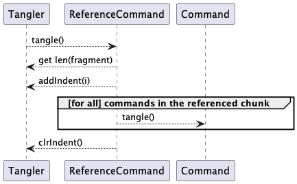
This approach can preserves the indentation in front of a @< reference @> command.
Tangler Subclass – emits the output files (28) =
class Tangler(Emitter):
code_indent = 0 #: Initial indent
def __init__(self, output: Path = Path.cwd()) -> None:
super().__init__(output)
self.context: list[int] = [] #: Indentations
self.fragment = "" # Nothing written yet.
# Create context and initial lastIndent values
self.resetIndent(self.code_indent)
# Summaries
self.reference_names: set[str] = set()
self.linesWritten = 0
self.totalFiles = 0
self.totalLines = 0
def emit(self, web: Web) -> None:
for file_chunk in web.files:
self.logger.info("Tangling %s", file_chunk.name)
self.emit_file(web, file_chunk)
def emit_file(self, web: Web, file_chunk: Chunk) -> None:
target_path = self.output / (file_chunk.name or "Untitled.out")
self.logger.debug("Writing %s", target_path)
self.logger.debug("Chunk %r", file_chunk)
with target_path.open("w") as target:
# An initial command to provide indentations.
for command in file_chunk.commands:
command.tangle(self, target)
→ Emitter write a block of code with proper indents (29)
→ Emitter indent control: set, clear and reset (30)∎ Tangler Subclass – emits the output files (28)
The codeBlock() method is used by each block of code tangled into
a document. There are two sources of indentation:
A
Chunkcan provide an indent setting as an option. This is provided by theindentattribute of the tangle context. If specified, this is the indentation.A
@< name @>ReferenceCommandmay be indented. This will be in aChunkas the following three commands:A
CodeCommandwith only spaces and no trailing\n. The indent is buffered – not written – and thefragmentattribute is set.The
ReferenceCommand. This interpolates text from aNamedChunkusing the prevailing indent. Thetangle()method usesaddIndent()andclrIndent()to mark this. The processing depends on this tangler’sfragmentattribute to provide the pending indentation; theaddIndent()must consume the fragment to prevent confusion with subsequent indentations.A
CodeCommandwith a trailing\n. (Often it’s only the newline.) If thefragmentattribute is set, there’s a pending indentation that hasn’t yet been written. This can happen with there’s a@@command at the left end of a line; often a Python decorator. The fragment is written and thefragmentattribute cleared. NoaddIdent()will have been done to consume the fragment.
While the WEB language permits multiple @<name@> @<name@> on a single line,
this is odd and potentially confusing. It isn’t clear how the second reference
should be indented.
The ReferenceCommand tangle() implementation handles much of this.
The following two rules apply:
A line of text that does not end with a newline, sets a new prevailing indent for the following command(s).
A line of text ending with a newline resets the prevailing indent.
This a stack, maintained by the Tangler.
Emitter write a block of code with proper indents (29) =
def codeBlock(self, target: TextIO, text: str) -> None:
"""Indented write of text in a ``CodeCommand``.
Counts lines and saves position to indent to when expanding ``@<...@>`` references.
The ``fragment`` is the prevailing indent used in reference expansion.
"""
for line in text.splitlines(keepends=True):
self.logger.debug("codeBlock(%r)", line)
indent = self.context[-1]
if len(line) == 0:
# Degenerate case of empty CodeText command. Should not occur.
pass
elif not line.endswith('\n'):
# Possible start of indentation prior to a ``@<name@>``
target.write(indent*' ')
wrote = target.write(line)
self.fragment = ' ' * wrote
# May be used by a ``ReferenceCommand``, if needed.
elif line.endswith('\n'):
target.write(indent*' ')
target.write(line)
self.linesWritten += 1
else:
raise RuntimeError("Non-exhaustive if statement.")∎ Emitter write a block of code with proper indents (29)
The addIndent() increments the indent.
Used by @<name@> to set a prevailing indent.
The setIndent() pushes a fixed indent instead adding an increment.
Used by a Chunk with an -indent option.
The clrIndent() method discards the most recent indent from the context stack.
This is used when finished
tangling a source chunk. This restores the indent to the prevailing indent.
The resetIndent() method removes all indent context information and resets the indent
to a default.
Emitter indent control: set, clear and reset (30) =
def addIndent(self, increment: int) -> None:
self.lastIndent = self.context[-1]+increment
self.context.append(self.lastIndent)
self.log_indent.debug("addIndent %d: %r", increment, self.context)
self.fragment = ""
def setIndent(self, indent: int) -> None:
self.context.append(indent)
self.lastIndent = self.context[-1]
self.log_indent.debug("setIndent %d: %r", indent, self.context)
self.fragment = ""
def clrIndent(self) -> None:
if len(self.context) > 1:
self.context.pop()
self.lastIndent = self.context[-1]
self.log_indent.debug("clrIndent %r", self.context)
self.fragment = ""
def resetIndent(self, indent: int = 0) -> None:
"""Resets the indentation context."""
self.lastIndent = indent
self.context = [self.lastIndent]
self.log_indent.debug("resetIndent %d: %r", indent, self.context)∎ Emitter indent control: set, clear and reset (30)
An extension to the Tangler class that only updates a file if the content has changed.
This tangles to a temporary file. If the content is identical, the temporary
file is quietly disposed of. Otherwise, the temporary file is linked to
the original name.
Files are compared with the filecmp module.
Imports (31) +=
import filecmp
import tempfile
import os
∎ Imports (31)
TanglerMake Subclass – extends Tangler to avoid touching files that didn’t change (32) =
class TanglerMake(Tangler):
def emit_file(self, web: Web, file_chunk: Chunk) -> None:
target_path = self.output / (file_chunk.name or "Untitled.out")
self.logger.debug("Writing %s via a temp file", target_path)
self.logger.debug("Chunk %r", file_chunk)
fd, tempname = tempfile.mkstemp(dir=os.curdir)
with os.fdopen(fd, "w") as target:
for command in file_chunk.commands:
command.tangle(self, target)
try:
same = filecmp.cmp(tempname, target_path)
except OSError as e:
same = False # Doesn't exist. (Could check for errno.ENOENT)
if same:
self.logger.info("Unchanged '%s'", target_path)
os.remove(tempname)
else:
# Windows requires the original file name be removed first.
try:
target_path.unlink()
except OSError as e:
pass # Doesn't exist. (Could check for errno.ENOENT)
target_path.parent.mkdir(parents=True, exist_ok=True)
target_path.hardlink_to(tempname)
os.remove(tempname)
self.logger.info("Wrote %d lines to %s", self.linesWritten, target_path)∎ TanglerMake Subclass – extends Tangler to avoid touching files that didn’t change (32)
Reference Strategy¶
The Reference Strategy has two implementations.
This is a strategy that plugs into the web as a whole.
A Chunk property collects this information
from the Web containing the Chunk.
TODO: This is currently not implemented.
Reference class hierarchy - strategies for weaving references to a chunk (33) =
class Reference(abc.ABC):
def __init__(self) -> None:
self.logger = logging.getLogger(self.__class__.__qualname__)
@abc.abstractmethod
def chunkReferencedBy(self, aChunk: Chunk) -> list[Chunk]:
"""Return a list of Chunks."""
...∎ Reference class hierarchy - strategies for weaving references to a chunk (33)
The SimpleReference subclass does the simplest version of resolution. It returns
the Chunk instances referenced.
Reference class hierarchy - strategies for weaving references to a chunk (34) +=
class SimpleReference(Reference):
def chunkReferencedBy(self, aChunk: Chunk) -> list[Chunk]:
if aChunk.referencedBy:
return [aChunk.referencedBy]
return []
∎ Reference class hierarchy - strategies for weaving references to a chunk (34)
The TransitiveReference subclass does a transitive closure of all
references to this Chunk.
This requires walking through the Web to locate “parents” of each referenced
Chunk.
Reference class hierarchy - strategies for weaving references to a chunk (35) +=
class TransitiveReference(Reference):
def chunkReferencedBy(self, aChunk: Chunk) -> list[Chunk]:
refBy = aChunk.referencedBy
if refBy:
all_refs = list(self.allParentsOf(refBy))
self.logger.debug("References: %r(%d) %r", aChunk.name, aChunk.seq, all_refs)
return all_refs
else:
return []
@staticmethod
def allParentsOf(chunk: Chunk | None, depth: int = 0) -> Iterator[Chunk]:
"""Transitive closure of parents via recursive ascent.
"""
if chunk:
yield chunk
yield from TransitiveReference.allParentsOf(chunk.referencedBy, depth+1)∎ Reference class hierarchy - strategies for weaving references to a chunk (35)
The core definitions and the Emitter class definitions are used
to build the web and produce output. The next section looks at the WebReader parser
to build a Web from a source file.
Input Parsing¶
There are three tiers to the input parsing:
A base tokenizer.
= Additionally, a separate parser is used for options in @d and @o commands.
The overall
WebReaderclass.
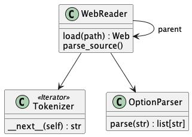
We’ll start with the WebReader class definition
Base Class Definitions (36) +=
→ Tokenizer class - breaks input into tokens (54)
→ Option Parser class - locates optional values on commands (56)
→ WebReader class - parses the input file, building the Web structure (37)∎ Base Class Definitions (36)
The WebReader Class¶
There are two forms of the constructor for a WebReader. The
initial WebReader instance is created with code like the following:
p = WebReader()
p.command = options.commandCharacter
This will define the command character; usually provided as a command-line parameter to the application.
When processing an include file (with the @i command), a child WebReader
instance is created with code like the following:
c = WebReader(parent=parentWebReader)
This will inherit the configuration from the parent WebReader.
This will also include a reference from child to parent so that embedded Python expressions
can view the entire input context.
The WebReader class parses the input file into command blocks.
These are assembled into Chunks, and the Chunks are assembled into the document
Web. Once this input pass is complete, the resulting Web can be tangled or
woven.
The commands have three general types:
“Structural” commands define the structure of the
Chunks. The structural commands are@dand@o, as well as the@{,@},@[,@]brackets, and the@icommand to include another file.“Inline” commands are inline within a
Chunk: they define internalCommands. Blocks of text are minor commands, as well as the@<name@>references. The@@escape is also handled here so that all further processing is independent of any parsing.“Content” commands generate woven content. These include the various cross-reference commands (
@f,@mand@u).
There are two class-level OptionParser instances used by this class.
- output_option_parser:
An
OptionParserused to parse the@ocommand’s options.- definition_option_parser:
An
OptionParserused to parse the@dcommand’s options.
The class has the following attributes:
- parent:
is the outer
WebReaderwhen processing a@icommand.- command:
is the command character; a WebReader will use the parent command character if the parent is not
None. Default is@.- permitList:
is the list of commands that are permitted to fail. This is generally an empty list or
('@i',).- _source:
The open source being used by
load().- filePath:
is used to pass the file name to the Web instance.
- tokenizer:
An instance of
Tokenizerused to parse the input. This is built whenload()is called.- totalLines:
- totalFiles:
- errors:
Summary counts.
WebReader class - parses the input file, building the Web structure (37) =
class WebReader:
"""Parse an input file, creating Chunks and Commands."""
output_option_parser = OptionParser(
OptionDef("-start", nargs=1, default=None),
OptionDef("-end", nargs=1, default=""),
OptionDef("argument", nargs='*'),
)
# TODO: Allow a numeric argument value in ``-indent``
definition_option_parser = OptionParser(
OptionDef("-indent", nargs=0),
OptionDef("-noindent", nargs=0),
OptionDef("argument", nargs='*'),
)
# Configuration
command: str #: The command prefix, default ``@``.
permitList: list[str] #: Permitted errors, usually @i commands
base_path: Path #: Working directory
tokenizer: Tokenizer #: The tokenizer used to find commands
# State of the reader
parent: Optional["WebReader"] #: Parent context for @i commands
filePath: Path #: Input Path
_source: TextIO #: Input file
content: list[Chunk] #: The sequence of Chunk instances being built
#: The class to use when processing text.
text_command: type[HasText]
def __init__(self, parent: Optional["WebReader"] = None) -> None:
self.logger = logging.getLogger(self.__class__.__qualname__)
# Configuration comes from the parent or defaults if there is no parent.
self.parent = parent
if self.parent:
self.command = self.parent.command
self.permitList = self.parent.permitList
else: # Defaults until overridden
self.command = '@'
self.permitList = []
# Summary
self.totalLines = 0
self.totalFiles = 0
self.errors = 0
→ WebReader command literals (52)
def __str__(self) -> str:
return self.__class__.__name__
→ WebReader location in the input stream (49)
→ WebReader load the web (51)
→ WebReader handle a command string (38)∎ WebReader class - parses the input file, building the Web structure (37)
The reader maintains a context into which constructs are added.
The Web contains Chunk instances in self.web.chunks.
The current chunk is self.web.chunks[-1].
Each Chunk, similarly, has a command context in chunk.commands[-1].
This works because the language is “flat”: there are no nested @d or @o
chunks.
Command recognition is done via a Chain of Command-like design.
There are two conditions: the command string is recognized or it is not recognized.
If the command is recognized, handleCommand() will do one of the following:
For “structural” commands, it will attach the current
Chunk(self.aChunk) to the currentWeb(self.aWeb), and start a newChunk. This becomes the context for processing commands. By default an anonymousChunkused to accumulate text is available for all of the content outside named chunks.For “inline” and “content” commands, create a
Command, attach it to the currentChunk(self.aChunk).
If the command is not recognized, handleCommand() returns false, and this is a syntax error.
A subclass can override handleCommand() to
Evaluate this superclass version;
If the command is unknown to the superclass, then the subclass can process it;
If the command is unknown to both classes, then return
False. Either a subclass will handle it, or the default activity taken byload()is to treat the command as a syntax error.
The handleCommand() implementation is a massive match statement.
It might be a good idea to decompose this into a number of separate methods.
This would make the match statement shorter and easier to understand.
WebReader handle a command string (38) =
def handleCommand(self, token: str) -> bool:
self.logger.debug("Reading %r", token)
new_chunk: Optional[Chunk] = None
match token[:2]:
case self.cmdo:
→ start an OutputChunk, adding it to the web (39)
case self.cmdd:
→ start a NamedChunk or NamedDocumentChunk, adding it to the web (40)
case self.cmdi:
→ include another file (41)
case self.cmdrcurl | self.cmdrbrak:
→ finish a chunk, start a new Chunk adding it to the web (42)
case self.cmdpipe:
→ assign user identifiers to the current chunk (43)
case self.cmdf:
self.content[-1].commands.append(FileXrefCommand(self.location()))
case self.cmdm:
self.content[-1].commands.append(MacroXrefCommand(self.location()))
case self.cmdu:
self.content[-1].commands.append(UserIdXrefCommand(self.location()))
case self.cmdlangl:
→ add a reference command to the current chunk (44)
case self.cmdlexpr:
→ add an expression command to the current chunk (46)
case self.cmdcmd:
→ double at-sign replacement, append this character to previous TextCommand (47)
case self.cmdlcurl | self.cmdlbrak:
# These should have been consumed as part of @o and @d parsing
self.logger.error("Extra %r (possibly missing chunk name) near %r", token, self.location())
self.errors += 1
case _:
return False # did not recogize the command
return True # did recognize the command∎ WebReader handle a command string (38)
An output chunk has the form @o name @{ content @}.
We use the first two tokens to name the OutputChunk. We expect
the @{ separator. We then attach all subsequent commands
to this chunk while waiting for the final @} token to end the chunk.
We’ll use an OptionParser to locate the optional parameters. This will then let
us build an appropriate instance of OutputChunk.
With some small additional changes, we could use OutputChunk(**options).
start an OutputChunk, adding it to the web (39) =
args = next(self.tokenizer)
self.expect({self.cmdlcurl})
options = self.output_option_parser.parse(args)
new_chunk = OutputChunk(
name=' '.join(options['argument']),
comment_start=''.join(options.get('start', "# ")),
comment_end=''.join(options.get('end', "")),
)
self.content.append(new_chunk)
self.text_command = CodeCommand
# capture an OutputChunk up to @}∎ start an OutputChunk, adding it to the web (39)
A named chunk has the form @d name @{ content @} for
code and @d name @[ content @] for document source.
We use the first two tokens to name the NamedChunk or NamedDocumentChunk.
We expect either the @{ or @[ separator, and use the actual
token found to choose which subclass of Chunk to create.
We then attach all subsequent commands
to this chunk while waiting for the final @} or @] token to
end the chunk.
We’ll use an OptionParser to locate the optional parameter of -noindent.
TODO: Extend this to support -indent number
Then we can use the options value to create an appropriate subclass of NamedChunk.
If `"-indent" is in options, this is the default.
If both are in the options, we should provide a warning.
TODO: Add a warning for conflicting options.
start a NamedChunk or NamedDocumentChunk, adding it to the web (40) =
args = next(self.tokenizer)
brack = self.expect({self.cmdlcurl, self.cmdlbrak})
options = self.output_option_parser.parse(args)
name = ' '.join(options['argument'])
if brack == self.cmdlbrak:
new_chunk = NamedDocumentChunk(name)
elif brack == self.cmdlcurl:
if '-noindent' in options:
new_chunk = NamedChunk_Noindent(name)
else:
new_chunk = NamedChunk(name)
elif brack == None:
new_chunk = None
pass # Error already noted by ``expect()``
else:
raise RuntimeError("Design Error")
if new_chunk:
self.content.append(new_chunk)
self.text_command = CodeCommand
# capture a NamedChunk up to @} or @]∎ start a NamedChunk or NamedDocumentChunk, adding it to the web (40)
An import command has the unusual form of @i name, with no trailing
separator. When we encounter the @i token, the next token will start with the
file name, but may continue with an anonymous chunk. To avoid confusion,
we require that all @i commands occur at the end of a line,
The break on the '\n' which ends the file name.
This permits file names with embedded spaces. It also permits arguments and options,
if really necessary.
Once we have split the file name away from the rest of the following anonymous chunk,
we push the following token (a \n) back into the token stream, so that it will be the
first token examined at the top of the load() loop.
We create a child WebReader instance to process the included file. The entire file
is loaded into the current Web instance. A new, empty Chunk is created at the end
of the file so that processing can resume with an anonymous Chunk.
The reader has a permitList attribute.
This lists any commands where failure is permitted. Currently, only the @i command
can be set to permit failure; this allows a .w to include
a file that does not yet exist.
The primary use case for this permitted error feature is when weaving test output.
A first use of the py-web-tool can be used to tangle the program source files,
ignoring a missing test output file, named in an @i command.
The application can then be run to create the missing test output file.
After this, a second use of the py-web-tool
can weave the test output file into a final, complete document.
include another file (41) =
incPath = Path(next(self.tokenizer).strip())
try:
include = WebReader(parent=self)
if not incPath.is_absolute():
incPath = self.base_path / incPath
self.logger.info("Including '%s'", incPath)
self.content.extend(include.load(incPath))
self.totalLines += include.tokenizer.lineNumber
self.totalFiles += include.totalFiles
if include.errors:
self.errors += include.errors
self.logger.error("Errors in included file '%s', output is incomplete.", incPath)
except Error as e:
self.logger.error("Problems with included file '%s', output is incomplete.", incPath)
self.errors += 1
except IOError as e:
self.logger.error("Problems finding included file '%s', output is incomplete.", incPath)
# Discretionary -- sometimes we want to continue
if self.cmdi in self.permitList: pass
else: raise # Seems heavy-handed, but, the file wasn't found!
# Start a new context for text or commands *after* the ``@i``.
self.content.append(Chunk())∎ include another file (41)
When a @} or @] are found, this finishes a named chunk. The next
text is therefore part of an anonymous chunk.
Note that no check is made to assure that the previous Chunk was indeed a named
chunk or output chunk started with @{ or @[.
To do this, an attribute would be
needed for each Chunk subclass that indicated if a trailing bracket was necessary.
For the base Chunk class, this would be false, but for all other subclasses of
Chunk, this would be true.
finish a chunk, start a new Chunk adding it to the web (42) =
# Start a new context for text or commands *after* this command.
self.content.append(Chunk())
self.text_command = TextCommand∎ finish a chunk, start a new Chunk adding it to the web (42)
User identifiers occur after a @| command inside a NamedChunk.
Note that no check is made to assure that the previous Chunk was indeed a named
chunk or output chunk started with @{.
To do this, an attribute would be
needed for each Chunk subclass that indicated if user identifiers are permitted.
For the base Chunk class, this would be false, but for the NamedChunk class and
OutputChunk class, this would be true.
User identifiers are name references at the end of a NamedChunk
These are accumulated and expanded by @u reference
assign user identifiers to the current chunk (43) =
try:
names = next(self.tokenizer).strip().split()
self.content[-1].def_names.extend(names)
except AttributeError:
# Out of place @| user identifier command
self.logger.error("Unexpected references near %r: %r", self.location(), token)
self.errors += 1∎ assign user identifiers to the current chunk (43)
A reference command has the form @<name@>. We accept three
tokens from the input, the middle token is the referenced name.
add a reference command to the current chunk (44) =
# get the name, introduce into the named Chunk dictionary
name = next(self.tokenizer).strip()
closing = self.expect({self.cmdrangl})
self.content[-1].commands.append(ReferenceCommand(name, self.location()))
self.logger.debug("Reading %r %r", name, closing)
∎ add a reference command to the current chunk (44)
An expression command has the form @(Python Expression@).
We accept three
tokens from the input, the middle token is the expression.
There are two alternative semantics for an embedded expression.
Deferred Execution. This requires definition of a new subclass of
Command,ExpressionCommand, and appends it into the currentChunk. At weave and tangle time, this expression is evaluated. The insert might look something like this:aChunk.append(ExpressionCommand(expression, self.location())).Immediate Execution. This simply creates a context and evaluates the Python expression. The output from the expression becomes a
TextCommand, and is append to the currentChunk.
We use the Immediate Execution semantics – the expression is immediately appended to the current chunk’s text.
We provide a few elements of the os module. We provide os.path library.
The os.getcwd() could be changed to os.path.realpath('.'), but that seems too long-winded.
Imports (45) +=
import builtins
import sys
import platform
∎ Imports (45)
TODO: Appening the text should be a method of a Chunk – either append text, or append a command.
add an expression command to the current chunk (46) =
# get the Python expression, create the expression result
expression = next(self.tokenizer)
self.expect({self.cmdrexpr})
try:
# Build Context
# **TODO:** Parts of this are static and can be built as part of ``__init__()``.
dangerous = {
'breakpoint', 'compile', 'eval', 'exec', 'execfile', 'globals', 'help', 'input',
'memoryview', 'open', 'print', 'super', '__import__'
}
safe = types.SimpleNamespace(**dict(
(name, obj)
for name,obj in builtins.__dict__.items()
if name not in dangerous
))
globals = dict(
__builtins__=safe,
os=types.SimpleNamespace(path=os.path, getcwd=os.getcwd, name=os.name),
time=time,
datetime=datetime,
platform=platform,
theWebReader=self,
theFile=self.filePath,
thisApplication=sys.argv[0],
__version__=__version__, # Legacy compatibility. Deprecated.
version=__version__,
theLocation=str(self.location()), # The only thing that's dynamic
)
# Evaluate
result = str(eval(expression, globals))
except Exception as exc:
self.logger.error('Failure to process %r: exception is %r', expression, exc)
self.errors += 1
result = f"@({expression!r}: Error {exc!r}@)"
cls = self.text_command
self.content[-1].commands.append(cls(result, self.location()))∎ add an expression command to the current chunk (46)
A double command sequence ('@@', when the command is an '@') has the
usual meaning of '@' in the input stream. We do this by appending text to
the last command in the current Chunk. This will append the
character on the end of the most recent TextCommand or CodeCommand`; if this fails, it will
create a new, empty TextCommand or CodeCommand.
TODO: This should be a method of a Chunk – either append text, or append a command.
double at-sign replacement, append this character to previous TextCommand (47) =
self.logger.debug(f"double-command: {self.content[-1]=}")
cls = self.text_command
if len(self.content[-1].commands) == 0:
self.content[-1].commands.append(cls(self.command, self.location()))
else:
tail = self.content[-1].commands[-1]
if tail.typeid.CodeCommand or tail.typeid.TextCommand:
cast(HasText, tail).text += self.command
else:
# A non-text command: one of @< name @>, @f, @m, @u.
self.content[-1].commands.append(cls(self.command, self.location()))∎ double at-sign replacement, append this character to previous TextCommand (47)
The expect() method examines the
next token to see if it is the expected item. '\n' are absorbed.
If this is not found, a standard type of error message is raised.
This is used by handleCommand().
WebReader handle a command string (48) +=
def expect(self, tokens: set[str]) -> str | None:
"""Compare next token with expectation, quietly skipping whitespace (i.e., ``\n``)."""
try:
t = next(self.tokenizer)
while t == '\n':
t = next(self.tokenizer)
except StopIteration:
self.logger.error("At %r: end of input, %r not found", self.location(), tokens)
self.errors += 1
return None
if t in tokens:
return t
else:
self.logger.error("At %r: expected %r, found %r", self.location(), tokens, t)
self.errors += 1
return None∎ WebReader handle a command string (48)
The location() provides the file name and line number.
This allows error messages as well as tangled or woven output
to correctly reference the original input files.
WebReader location in the input stream (49) =
def location(self) -> tuple[str, int]:
return (str(self.filePath), self.tokenizer.lineNumber+1)
∎ WebReader location in the input stream (49)
The load() method reads the entire input file as a sequence
of tokens, split up by the Tokenizer. Each token that appears
to be a command is passed to the handleCommand() method. If
the handleCommand() method returns a True result, the command was recognized
and placed in the Web. If handleCommand() returns a False result, the command
was unknown, and we write a warning but treat it as text.
The load() method is used recursively to handle the @i command. The issue
is that it’s always loading a single top-level web.
Imports (50) +=
from typing import TextIO, cast
∎ Imports (50)
WebReader load the web (51) =
def load(self, filepath: Path, source: TextIO | None = None) -> list[Chunk]:
"""Returns a flat list of chunks to be made into a Web.
Also used to expand ``@i`` included files.
"""
self.filePath = filepath
self.base_path = self.filePath.parent
self.text_command = TextCommand
if source:
self._source = source
self.parse_source()
else:
with self.filePath.open() as self._source:
self.parse_source()
return self.content
def parse_source(self) -> None:
"""Builds a sequence of Chunks."""
self.tokenizer = Tokenizer(self._source, self.command)
self.totalFiles += 1
# Initial anonymous chunk.
self.content = [Chunk()]
for token in self.tokenizer:
if len(token) >= 2 and token.startswith(self.command):
if self.handleCommand(token):
continue
else:
self.logger.error('Unknown @-command in input: %r near %r', token, self.location())
cls = self.text_command
self.content[-1].commands.append(cls(token, self.location()))
elif token:
# Accumulate a non-empty block of text in the current chunk.
# Output Chunk and Named Chunk should have CodeCommand
# Chunk should have TextCommand.
# Edge case is Chunk with no Command
if len(self.content[-1].commands) == 0:
cls = self.text_command
self.content[-1].commands.append(cls(token, self.location()))
elif (tail := self.content[-1].commands[-1]) and (tail.typeid.CodeCommand or tail.typeid.TextCommand):
cast(HasText, tail).text += token
else:
# A non-text command: one of @< name @>, @f, @m, @u.
cls = self.text_command
self.content[-1].commands.append(cls(token, self.location()))
else:
# Whitespace
pass
self.logger.debug("parse_source: [")
for c in self.content:
self.logger.debug(" %r", c)
self.logger.debug("]")∎ WebReader load the web (51)
The command character can be changed to permit
some flexibility when working with languages that make extensive
use of the @ symbol, i.e., PERL.
The initialization of the WebReader is based on the selected
command character.
WebReader command literals (52) =
# Structural ("major") commands
self.cmdo = self.command+'o'
self.cmdd = self.command+'d'
self.cmdlcurl = self.command+'{'
self.cmdrcurl = self.command+'}'
self.cmdlbrak = self.command+'['
self.cmdrbrak = self.command+']'
self.cmdi = self.command+'i'
# Inline ("minor") commands
self.cmdlangl = self.command+'<'
self.cmdrangl = self.command+'>'
self.cmdpipe = self.command+'|'
self.cmdlexpr = self.command+'('
self.cmdrexpr = self.command+')'
self.cmdcmd = self.command+self.command
# Content "minor" commands
self.cmdf = self.command+'f'
self.cmdm = self.command+'m'
self.cmdu = self.command+'u'∎ WebReader command literals (52)
The Tokenizer Class¶
The WebReader requires a tokenizer. The tokenizer breaks the input text
into a stream of tokens. There are two broad classes of tokens:
r'@.'command tokens, including the structural, inline, and content commands.r'\n'. Inside text, these matter. Within structural command tokens, these don’t matter. Except after the filename after an@icommand, where it ends the command.The remaining text; neither newlines nor commands.
The tokenizer works by reading the entire file and splitting on r'@.' patterns.
The re.split() function will separate the input
and preserve the actual character sequence on which the input was split.
This breaks the input into blocks of text separated by the r'@.' characters.
For example:
>>> pat.split( "@{hi mom@}")
['', '@{', 'hi mom', '@}', '']
This tokenizer splits the input using r'@.|\n'. The idea is that
we locate commands, newlines and the interstitial text as three classes of tokens.
We can then assemble each Command instance from a short sequence of tokens.
The core TextCommand and CodeCommand will be a line of text ending with
the \n.
The tokenizer counts newline characters for us, so that error messages can include a line number. Also, we can tangle extract comments into a file to reveal source line numbers.
Since the tokenizer is a proper iterator, we can use tokens = iter(Tokenizer(source))
and next(tokens) to step through the sequence of tokens until we raise a StopIteration
exception.
Imports (53) +=
import re
from collections.abc import Iterator, Iterable
∎ Imports (53)
Tokenizer class - breaks input into tokens (54) =
class Tokenizer(Iterator[str]):
def __init__(self, stream: TextIO, command_char: str='@') -> None:
self.command = command_char
self.parsePat = re.compile(f'({self.command}.|\\n)')
self.token_iter = (t for t in self.parsePat.split(stream.read()) if len(t) != 0)
self.lineNumber = 0
def __next__(self) -> str:
token = next(self.token_iter)
self.lineNumber += token.count('\n')
return token
def __iter__(self) -> Iterator[str]:
return self∎ Tokenizer class - breaks input into tokens (54)
The Option Parser Class¶
For some commands (@d and @o) we have options as well as the chunk name
or file name. This roughly parallels the way Tcl or the shell works.
The two examples are
@owhich has an optional-startand-endthat are used to provide comment bracketing information. For example:@0 -start /* -end */ something.cssProvides two options in addition to the required filename.
@dwhich has an optional-noidentor-indentthat is used to provide the indentation rules for this chunk. Some chunks are not indented automatically. It’s up to the author to get the indentation right. This is used in the case of a Python “”” string that would be ruined by indentation.
To handle this, we have a separate lexical scanner and parser for these two commands.
Imports (55) +=
import shlex
∎ Imports (55)
Here’s how we can define an option.
OptionParser(
OptionDef("-start", nargs=1, default=None),
OptionDef("-end", nargs=1, default=""),
OptionDef("-indent", nargs=0), # A default
OptionDef("-noindent", nargs=0),
OptionDef("argument", nargs='*'),
)
The idea is to parallel argparse.add_argument() syntax.
Option Parser class - locates optional values on commands (56) =
class ParseError(Exception): pass
∎ Option Parser class - locates optional values on commands (56)
Option Parser class - locates optional values on commands (57) +=
class OptionDef:
def __init__(self, name: str, **kw: Any) -> None:
self.name = name
self.__dict__.update(kw)∎ Option Parser class - locates optional values on commands (57)
The parser breaks the text into words using shelex rules.
It then steps through the words, accumulating the options and the
final argument value.
Option Parser class - locates optional values on commands (58) +=
class OptionParser:
def __init__(self, *arg_defs: Any) -> None:
self.args = dict((arg.name, arg) for arg in arg_defs)
self.trailers = [k for k in self.args.keys() if not k.startswith('-')]
def parse(self, text: str) -> dict[str, list[str]]:
try:
word_iter = iter(shlex.split(text))
except ValueError as e:
raise Error(f"Error parsing options in {text!r}")
options = dict(self._group(word_iter))
return options
def _group(self, word_iter: Iterator[str]) -> Iterator[tuple[str, list[str]]]:
option: str | None
value: list[str]
final: list[str]
option, value, final = None, [], []
for word in word_iter:
if word == '--':
if option:
yield option, value
try:
final = [next(word_iter)]
except StopIteration:
final = [] # Special case of '--' at the end.
break
elif word.startswith('-'):
if word in self.args:
if option:
yield option, value
option, value = word, []
else:
raise ParseError(f"Unknown option {word!r}")
else:
if option:
if self.args[option].nargs == len(value):
yield option, value
final = [word]
break
else:
value.append(word)
else:
final = [word]
break
# In principle, we step through the trailers based on nargs counts.
for word in word_iter:
final.append(word)
yield self.trailers[0], final∎ Option Parser class - locates optional values on commands (58)
In principle, we step through the trailers based on nargs counts.
Since we only ever have the one trailer, we can skate by without checking the number of args.
The processing becomes a bit more complex to capture the positional arguments, in order. Then we’d have something like this. (Untested, incomplete, just hand-waving.)
trailers = self.trailers[:] # Stateful shallow copy
for word in word_iter:
if len(final) == trailers[-1].nargs: # nargs=='*' vs. nargs=int??
yield trailers[0], " ".join(final)
final = 0
trailers.pop(0)
yield trailers[0], " ".join(final)
Other Application Components¶
There are a number of other components:
Error class Defines a uniform exception for this module.
Action Class Hierarchy defines the actions the application can perform. This includes loading the WEB file, weaving, tangling, and doing combinations of actions.
The Application Class is a high-level definition of the pyWeb-tool application as a whole.
Logging setup defines a handy context manager to configure and shut down logging.
The Main Function is a top-level function to create an instance of
Application, and execute it with either supplied arguments or (by default) the actual command-line arguments. This makes it easy to import and reusemain()in other applications.
Error class¶
An Error is raised whenever processing cannot continue. Since it
is a subclass of Exception, it takes an arbitrary number of arguments. The
first should be the basic message text. Subsequent arguments provide
additional details. We will try to be sure that
all of our internal exceptions reference a specific chunk, if possible.
This means either including the chunk as an argument, or catching the
exception and appending the current chunk to the exception’s arguments.
The Python raise statement takes an instance of Error and passes it
to the enclosing try/except statement for processing.
The typical creation is as follows:
raise Error(f"No full name for {chunk.name!r}", chunk)
A typical exception-handling suite might look like this:
try:
...something that may raise an Error or Exception...
except Error as e:
print(e.args) # this is a pyWeb internal Error
except Exception as w:
print(w.args) # this is some other Python Exception
The Error class is a subclass of Exception used to differentiate
application-specific
exceptions from other Python exceptions. It does no additional processing,
but merely creates a distinct class to facilitate writing except statements.
Error class – defines the errors raised (59) =
class Error(Exception): pass
∎ Error class – defines the errors raised (59)
Action Class Hierarchy¶
This application performs three major actions: loading the document web, weaving and tangling. Generally, the use case is to perform a load, weave and tangle. However, a less common use case is to first load and tangle output files, run a regression test and then load and weave a result that includes the test output file.
The -x option excludes one of the two output actions. The -xw
excludes the weave pass, doing only the tangle action. The -xt excludes
the tangle pass, doing the weave action.
This two pass action might be embedded in the following type of Python program.
import pyweb, os, runpy, sys, pathlib, contextlib
log = pathlib.Path("source.log")
Tangler().emit(web)
with log.open("w") as target:
with contextlib.redirect_stdout(target):
# run the app, capturing the output
runpy.run_path('source.py')
# Alternatives include using pytest or doctest
Weaver().emit(web, "something.rst")
The first step runs py-web-tool , excluding the final weaving pass. The second
step runs the tangled program, source.py, and produces test results in
some log file, source.log. The third step runs py-web-tool excluding the
tangle pass. This produces a final document that includes the source.log
test results.
To accomplish this, we provide a class hierarchy that defines the various
actions of the py-web-tool application. This class hierarchy defines an extensible set of
fundamental actions. This gives us the flexibility to create a simple sequence
of actions and execute any combination of these. It eliminates the need for a
forest of if-statements to determine precisely what will be done.
Each action has the potential to update the state of the overall application. A partner with this command hierarchy is the Application class that defines the application options, inputs and results.
Action class hierarchy – used to describe actions of the application (60) =
→ Action superclass has common features of all actions (61)
→ ActionSequence subclass that holds a sequence of other actions (64)
→ WeaveAction subclass initiates the weave action (67)
→ TangleAction subclass initiates the tangle action (70)
→ LoadAction subclass loads the document web (73)∎ Action class hierarchy – used to describe actions of the application (60)
The Action class embodies the basic operations of py-web-tool .
The intent of this hierarchy is to both provide an easily expanded method of
adding new actions, but an easily specified list of actions for a particular
run of py-web-tool .
The overall process of the application is defined by an instance of Action.
This instance may be the WeaveAction instance, the TangleAction instance
or a ActionSequence instance.
The instance is constructed during parsing of the input parameters. Then the
Action class perform() method is called to actually perform the
action. There are three standard Action instances available: an instance
that is a macro and does both tangling and weaving, an instance that excludes tangling,
and an instance that excludes weaving. These correspond to the command-line options.
anOp = SomeAction("name")
anOp(argparse.Namespace)
The Action is the superclass for all actions.
An Action has a number of common attributes.
- name:
A name for this action.
- options:
The
argparse.Namespaceobject. A LoadAction will update this with theWebobject that was loaded.
- !start:
The time at which the action started.
Action superclass has common features of all actions (61) =
class Action:
"""An action performed by pyWeb."""
start: float
options: argparse.Namespace
def __init__(self, name: str) -> None:
self.name = name
self.logger = logging.getLogger(self.__class__.__qualname__)
def __str__(self) -> str:
return f"{self.name!s} [{self.options.web!s}]"
→ Action call method actually does the real work (62)
→ Action final summary of what was done (63)∎ Action superclass has common features of all actions (61)
The __call__() method does the real work of the action.
For the superclass, it merely logs a message. This is overridden
by a subclass.
Action call method actually does the real work (62) =
def __call__(self, options: argparse.Namespace) -> None:
self.logger.info("Starting %s", self.name)
self.options = options
self.start = time.process_time()∎ Action call method actually does the real work (62)
The summary() method returns some basic processing
statistics for this action.
Action final summary of what was done (63) =
def duration(self) -> float:
"""Return duration of the action."""
return (self.start and time.process_time()-self.start) or 0
def summary(self) -> str:
return f"{self.name!s} in {self.duration():0.3f} sec."∎ Action final summary of what was done (63)
ActionSequence Class¶
A ActionSequence defines a composite action; it is a sequence of
other actions. When the macro is performed, it delegates to the
sub-actions.
The instance is created during parsing of input parameters. An instance of this class is one of the three standard actions available; it generally is the default, “do everything” action.
This class overrides the perform() method of the superclass. It also adds
an append() method that is used to construct the sequence of actions.
ActionSequence subclass that holds a sequence of other actions (64) =
class ActionSequence(Action):
"""An action composed of a sequence of other actions."""
def __init__(self, name: str, opSequence: list[Action] | None = None) -> None:
super().__init__(name)
if opSequence: self.opSequence = opSequence
else: self.opSequence = []
def __str__(self) -> str:
return "; ".join([str(x) for x in self.opSequence])
→ ActionSequence call method delegates the sequence of ations (65)
→ ActionSequence summary summarizes each step (66)∎ ActionSequence subclass that holds a sequence of other actions (64)
Since the macro __call__() method delegates to other Actions,
it is possible to short-cut argument processing by using the Python
*args construct to accept all arguments and pass them to each
sub-action.
ActionSequence call method delegates the sequence of ations (65) =
def __call__(self, options: argparse.Namespace) -> None:
super().__call__(options)
for o in self.opSequence:
o(self.options)∎ ActionSequence call method delegates the sequence of ations (65)
The summary() method returns some basic processing
statistics for each step of this action.
ActionSequence summary summarizes each step (66) =
def summary(self) -> str:
return ", ".join([o.summary() for o in self.opSequence])
∎ ActionSequence summary summarizes each step (66)
WeaveAction Class¶
The WeaveAction defines the action of weaving. This action
logs a message, and invokes the weave() method of the Web instance.
This method also includes the basic decision on which weaver to use. If a Weaver was
specified on the command line, this instance is used. Otherwise, the first few characters
are examined and a weaver is selected.
This class overrides the __call__() method of the superclass.
If the options include theWeaver, that Weaver instance will be used.
Otherwise, the web.language() method function is used to guess what weaver to use.
WeaveAction subclass initiates the weave action (67) =
class WeaveAction(Action):
"""Weave the final document."""
def __init__(self) -> None:
super().__init__("Weave")
def __str__(self) -> str:
return f"{self.name!s} [{self.options.web!s}, {self.options.theWeaver!s}]"
→ WeaveAction call method to pick the language (68)
→ WeaveAction summary of language choice (69)∎ WeaveAction subclass initiates the weave action (67)
The language is picked just prior to weaving. It is either (1) the language specified on the command line, or, (2) if no language was specified, a language is selected based on the first few characters of the input.
Weaving can only raise an exception when there is a reference to a chunk that is never defined.
WeaveAction call method to pick the language (68) =
def __call__(self, options: argparse.Namespace) -> None:
super().__call__(options)
if not self.options.weaver:
# Examine first few chars of first chunk of web to determine language
self.options.weaver = self.options.web.language()
self.logger.info("Using %s", self.options.theWeaver)
self.options.theWeaver.reference_style = self.options.reference_style
self.options.theWeaver.output = self.options.output
try:
self.options.theWeaver.set_markup(self.options.weaver)
self.options.theWeaver.emit(self.options.web)
self.logger.info("Finished Normally")
except Error as e:
self.logger.error("Problems weaving document from %r (weave file is faulty).", self.options.web.web_path)
#raise∎ WeaveAction call method to pick the language (68)
The summary() method returns some basic processing
statistics for the weave action.
WeaveAction summary of language choice (69) =
def summary(self) -> str:
if self.options.theWeaver and self.options.theWeaver.linesWritten > 0:
return (
f"{self.name!s} {self.options.theWeaver.linesWritten:d} lines in {self.duration():0.3f} sec."
)
return f"did not {self.name!s}"
∎ WeaveAction summary of language choice (69)
TangleAction Class¶
The TangleAction defines the action of tangling. This operation
logs a message, and invokes the weave() method of the Web instance.
This method also includes the basic decision on which weaver to use. If a Weaver was
specified on the command line, this instance is used. Otherwise, the first few characters
are examined and a weaver is selected.
This class overrides the __call__() method of the superclass.
The options must include theTangler, with the Tangler instance to be used.
TangleAction subclass initiates the tangle action (70) =
class TangleAction(Action):
"""Tangle source files."""
def __init__(self) -> None:
super().__init__("Tangle")
→ TangleAction call method does tangling of the output files (71)
→ TangleAction summary method provides total lines tangled (72)∎ TangleAction subclass initiates the tangle action (70)
Tangling can only raise an exception when a cross reference request (@f, @m or @u)
occurs in a program code chunk. Program code chunks are defined
with any of @d or @o and use @{ @} brackets.
TangleAction call method does tangling of the output files (71) =
def __call__(self, options: argparse.Namespace) -> None:
super().__call__(options)
self.options.theTangler.include_line_numbers = self.options.tangler_line_numbers
self.options.theTangler.output = self.options.output
try:
self.options.theTangler.emit(self.options.web)
except Error as e:
self.logger.error("Problems tangling outputs from %r (tangle files are faulty).", self.options.web.web_path)
#raise∎ TangleAction call method does tangling of the output files (71)
The summary() method returns some basic processing
statistics for the tangle action.
TangleAction summary method provides total lines tangled (72) =
def summary(self) -> str:
if self.options.theTangler and self.options.theTangler.linesWritten > 0:
return (
f"{self.name!s} {self.options.theTangler.totalLines:d} lines in {self.duration():0.3f} sec."
)
return f"did not {self.name!r}"
∎ TangleAction summary method provides total lines tangled (72)
LoadAction Class¶
The LoadAction defines the action of loading the web structure. This action
uses the application’s webReader to actually do the load.
An instance is created during parsing of the input parameters. An instance of this class is part of any of the weave, tangle and “do everything” action.
This class overrides the __call__() method of the superclass.
The options must include webReader, with the WebReader instance to be used.
LoadAction subclass loads the document web (73) =
class LoadAction(Action):
"""Load the source web."""
def __init__(self) -> None:
super().__init__("Load")
def __str__(self) -> str:
return f"Load [{self.webReader!s}, {self.options.web!s}]"
→ LoadAction call method loads the input files (74)
→ LoadAction summary provides lines read (75)∎ LoadAction subclass loads the document web (73)
Trying to load the web involves two steps, either of which can raise exceptions due to incorrect inputs.
The
WebReaderclassload()method can raise exceptions for a number of syntax errors as well as OS errors.Missing closing brackets (
@},@]or@>).Missing opening bracket (
@{or@[) after a chunk name (@dor@o).Extra brackets (
@{,@[,@},@]).Extra
@|.The input file does not exist or is not readable.
The
WebclasscreateUsedBy()method can raise an exception when a chunk reference cannot be resolved to a named chunk.
LoadAction call method loads the input files (74) =
def __call__(self, options: argparse.Namespace) -> None:
super().__call__(options)
self.webReader = self.options.webReader
self.webReader.command = self.options.command
self.webReader.permitList = self.options.permitList
self.logger.debug("Reader Class %s", self.webReader.__class__.__name__)
error = f"Problems with source file {self.options.source_path!r}, no output produced."
try:
chunks = self.webReader.load(self.options.source_path)
if self.webReader.errors != 0:
raise Error("Syntax Errors in the Web")
self.logger.debug("Read %d Chunks", len(chunks))
self.options.web = Web(chunks)
self.options.web.web_path = self.options.source_path
self.logger.debug("Web contains %3d chunks", len(self.options.web.chunks))
self.logger.debug("Web defines %3d files", len(self.options.web.files))
self.logger.debug("Web defines %3d macros", len(self.options.web.macros))
self.logger.debug("Web defines %3d names", len(self.options.web.userids))
except Error as e:
self.logger.error(error)
raise # Could not be parsed or built.
except IOError as e:
self.logger.error(error)
raise∎ LoadAction call method loads the input files (74)
The summary() method returns some basic processing
statistics for the load action.
LoadAction summary provides lines read (75) =
def summary(self) -> str:
return (
f"{self.name!s} {self.webReader.totalLines:d} lines from {self.webReader.totalFiles:d} files in {self.duration():0.3f} sec."
)
∎ LoadAction summary provides lines read (75)
The Application Class¶
The Application class is provided so that the Action instances
have an overall application to update. This allows the WeaveAction to
provide the selected Weaver instance to the application. It also provides a
central location for the various options and alternatives that might be accepted from
the command line.
The constructor creates a default argparse.Namespace with values
suitable for weaving and tangling.
The parseArgs() method uses the sys.argv sequence to
parse the command line arguments and update the options. This allows a
program to pre-process the arguments, passing other arguments to this module.
The process() method processes a list of files. This is either
the list of files passed as an argument, or it is the list of files
parsed by the parseArgs() method.
The parseArgs() and process() functions are separated so that
another application can import pyweb, bypass command-line parsing, yet still perform
the basic actionss simply and consistently.
For example:
import pyweb, argparse p = argparse.ArgumentParser() argument definition config = p.parse_args() a = pyweb.Application() Configure the Application based on options a.process(config)
The main() function creates an Application instance and
calls the parseArgs() and process() methods to provide the
expected default behavior for this module when it is used as the main program.
The configuration can be either a types.SimpleNamespace or an
argparse.Namespace instance.
Imports (76) +=
import argparse
∎ Imports (76)
Application Class for overall CLI operation (77) =
class Application:
def __init__(self) -> None:
self.logger = logging.getLogger(self.__class__.__qualname__)
→ Application default options (78)
→ Application parse command line (79)
→ Application class process all files (80)∎ Application Class for overall CLI operation (77)
The first part of parsing the command line is setting default values that apply when parameters are omitted. The default values are set as follows:
- defaults:
A default configuration.
- webReader:
is the
WebReaderinstance created for the current input file.- doWeave:
instance of
Actionthat does weaving only.- doTangle:
instance of
Actionthat does tangling only.- theAction:
is an instance of
Actionthat describes the default overall action: load, tangle and weave. This is the default unless overridden by an option.
Here are the configuration values. These are attributes
of the argparse.namespace default as well as the updated
namespace returned by parseArgs().
- verbosity:
Either
logging.INFO,logging.WARNorlogging.DEBUG- command:
is set to
@as the default command introducer.- permit:
The raw list of permitted command characters, perhaps
'i'.- permitList:
provides a list of commands that are permitted to fail. Typically this is empty, or contains
@ito allow the include command to fail.- files:
is the final list of argument files from the command line; these will be processed unless overridden in the call to
process().
- !skip:
a list of steps to skip: perhaps
'w'or't'to skip weaving or tangling.
- weaver:
the short name of the weaver.
- theTangler:
is set to a
TanglerMakeinstance to create the output files.- theWeaver:
is set to an instance of a subclass of
Weaverbased onweaver
Application default options (78) =
self.defaults = argparse.Namespace(
verbosity=logging.INFO,
command='@',
weaver='rst',
skip='', # Don't skip any steps
permit='', # Don't tolerate missing includes
reference='s', # Simple references
tangler_line_numbers=False,
output=Path.cwd(),
)
# Primitive Actions
self.loadOp = LoadAction()
self.weaveOp = WeaveAction()
self.tangleOp = TangleAction()
# Composite Actions
self.doWeave = ActionSequence("load and weave", [self.loadOp, self.weaveOp])
self.doTangle = ActionSequence("load and tangle", [self.loadOp, self.tangleOp])
self.theAction = ActionSequence("load, tangle and weave", [self.loadOp, self.tangleOp, self.weaveOp])∎ Application default options (78)
The algorithm for parsing the command line parameters uses the built in
argparse module. We have to build a parser, define the options,
and the parse the command-line arguments, updating the default namespace.
We further expand on the arguments. This transforms simple strings into object instances.
Application parse command line (79) =
def parseArgs(self, argv: list[str]) -> argparse.Namespace:
p = argparse.ArgumentParser()
p.add_argument("-v", "--verbose", dest="verbosity", action="store_const", const=logging.INFO)
p.add_argument("-s", "--silent", dest="verbosity", action="store_const", const=logging.WARN)
p.add_argument("-d", "--debug", dest="verbosity", action="store_const", const=logging.DEBUG)
p.add_argument("-c", "--command", dest="command", action="store")
p.add_argument("-w", "--weaver", dest="weaver", action="store")
p.add_argument("-x", "--except", dest="skip", action="store", choices=('w', 't'))
p.add_argument("-p", "--permit", dest="permit", action="store")
p.add_argument("-r", "--reference", dest="reference", action="store", choices=('t', 's'))
p.add_argument("-n", "--linenumbers", dest="tangler_line_numbers", action="store_true")
p.add_argument("-o", "--output", dest="output", action="store", type=Path)
p.add_argument("-V", "--Version", action='version', version=f"py-web-tool pyweb.py {__version__}")
p.add_argument("files", nargs='+', type=Path)
config = p.parse_args(argv, namespace=self.defaults)
self.expand(config)
return config
def expand(self, config: argparse.Namespace) -> argparse.Namespace:
"""Translate the argument values from simple text to useful objects.
Weaver. Tangler. WebReader.
"""
match config.reference:
case 't':
config.reference_style = TransitiveReference()
case 's':
config.reference_style = SimpleReference()
case _:
raise Error("Improper configuration")
# Weaver & Tangler
config.theWeaver = Weaver(config.output)
config.theTangler = TanglerMake(config.output)
if config.permit:
# save permitted errors, usual case is ``-pi`` to permit ``@i`` include errors
config.permitList = [f'{config.command!s}{c!s}' for c in config.permit]
else:
config.permitList = []
config.webReader = WebReader()
return config∎ Application parse command line (79)
The process() function uses the current Application settings
to process each file as follows:
Create a new
WebReaderfor theApplication, providing the parameters required to process the input file.Create a
Webinstance, w and set the Web’s sourceFileName from the WebReader’s filePath.Perform the given command, typically a
ActionSequence, which does some combination of load, tangle the output files and weave the final document in the target language; if necessary, examine theWebto determine the documentation language.Print a performance summary line that shows lines processed per second.
In the event of failure in any of the major processing steps, a summary message is produced, to clarify the state of the output files, and the exception is reraised. The re-raising is done so that all exceptions are handled by the outermost main program.
Application class process all files (80) =
def process(self, config: argparse.Namespace) -> None:
root = logging.getLogger()
root.setLevel(config.verbosity)
self.logger.debug("Setting root log level to %r", logging.getLevelName(root.getEffectiveLevel()))
if config.command:
self.logger.debug("Command character %r", config.command)
if config.skip:
if config.skip.lower().startswith('w'): # not weaving == tangling
self.theAction = self.doTangle
elif config.skip.lower().startswith('t'): # not tangling == weaving
self.theAction = self.doWeave
else:
raise Exception(f"Unknown -x option {config.skip!r}")
for f in config.files:
self.logger.info("%s %s %r", self.theAction.name, __version__, f)
config.source_path = f
self.theAction(config)
self.logger.info(self.theAction.summary())∎ Application class process all files (80)
Logging Setup¶
We’ll create a logging context manager. This allows us to wrap the main()
function in an explicit with statement that assures that logging is
configured and cleaned up politely.
Imports (81) +=
import logging
import logging.config
∎ Imports (81)
This has two configuration approaches. If a positional argument is given,
that dictionary is used for logging.config.dictConfig. Otherwise,
keyword arguments are provided to logging.basicConfig.
A subclass might properly load a dictionary
encoded in YAML and use that with logging.config.dictConfig.
Logging Setup (82) =
class Logger:
def __init__(self, dict_config: dict[str, Any] | None = None, **kw_config: Any) -> None:
self.dict_config = dict_config
self.kw_config = kw_config
def __enter__(self) -> "Logger":
if self.dict_config:
logging.config.dictConfig(self.dict_config)
else:
logging.basicConfig(**self.kw_config)
return self
def __exit__(self, *args: Any) -> Literal[False]:
logging.shutdown()
return False∎ Logging Setup (82)
Here’s a sample logging setup. This creates a simple console handler and
a formatter that matches the basicConfig formatter.
This configuration dictionary defines the root logger plus some overrides for class loggers that might be used to gather additional information.
Logging Setup (83) +=
log_config = {
'version': 1,
'disable_existing_loggers': False, # Allow pre-existing loggers to work.
'style': '{',
'handlers': {
'console': {
'class': 'logging.StreamHandler',
'stream': 'ext://sys.stderr',
'formatter': 'basic',
},
},
'formatters': {
'basic': {
'format': "{levelname}:{name}:{message}",
'style': "{",
}
},
'root': {'handlers': ['console'], 'level': logging.INFO,},
# For specific debugging support...
'loggers': {
'Weaver': {'level': logging.INFO},
'WebReader': {'level': logging.INFO},
'Tangler': {'level': logging.INFO},
'TanglerMake': {'level': logging.INFO},
'indent.TanglerMake': {'level': logging.INFO},
'Web': {'level': logging.INFO},
'WebReader': {'level': logging.INFO},
# Unit test requires this...
'ReferenceCommand': {'level': logging.INFO},
},
}∎ Logging Setup (83)
This seems a bit verbose. The following configuration file might be better.
TODO: Implement this
logging.toml (84) =
version = 1
disable_existing_loggers = false
[root]
handlers = [ "console",]
level = "INFO"
[handlers.console]
class = "logging.StreamHandler"
stream = "ext://sys.stderr"
formatter = "basic"
[formatters.basic]
format = "{levelname}:{name}:{message}"
style = "{"
[loggers.Weaver]
level = "INFO"
[loggers.WebReader]
level = "INFO"
[loggers.Tangler]
level = "INFO"
[loggers.TanglerMake]
level = "INFO"
[loggers.indent.TanglerMake]
level = "INFO"
[loggers.WebReader]
level = "INFO"
[loggers.ReferenceCommand]
# Unit test requires this...
level = "INFO"∎ logging.toml (84)
We can load this with
log_config = toml.load(Path("logging.toml"))
This makes it slightly easier to add and change debuging alternatives.
Rather then use the -v and -d options, a -l logging.toml
options can be used to provide non-default config values.
Also, we might want a decorator to define loggers more consistently for each class definition.
The Main Function¶
The top-level interface is the main() function.
This function creates an Application instance.
The Application object parses the command-line arguments.
Then the Application object does the requested processing.
This two-step process allows for some dependency injection to customize argument processing.
We might also want to parse a logging configuration file, as well as a weaver template configuration file.
Interface Functions (85) =
def main(argv: list[str] = sys.argv[1:]) -> None:
a = Application()
config = a.parseArgs(argv)
a.process(config)
∎ Interface Functions (85)
pyWeb Module File¶
The pyWeb application file is shown below:
pyweb.py (86) =
→ Overheads (88)
→ Imports (2)
→ Error class -- defines the errors raised (59)
→ Base Class Definitions (1)
→ Action class hierarchy -- used to describe actions of the application (60)
→ Application Class for overall CLI operation (77)
→ Logging Setup (82)
→ Interface Functions (85)
if __name__ == "__main__":
with Logger(log_config):
main()∎ pyweb.py (86)
The Overheads are described below, they include things like:
shell escape
doc string
__version__setting
Python Library Imports are actually scattered in various places in this description.
The more important elements are described in separate sections:
Base Class Definitions
Application Class and Main Functions
Interface Functions
Python Library Imports¶
Numerous Python library modules are used by this application.
A few are listed here because they’re used widely. Others are listed closer to where they’re referenced.
The
osmodule provide os-specific file and path manipulations; it is used to transform the input file name into the output file name as well as track down file modification times.The
timemodule provides a handy current-time string; this is used to by the HTML Weaver to write a closing timestamp on generated HTML files, as well as log messages.The
datetimemodule is used to format times, phasing out use oftime.The
typesmodule is used to get atSimpleNamespacefor configuration.
Imports (87) +=
import os
import time
import datetime
import types
∎ Imports (87)
Note that os.path, time, datetime and platform`
are provided in the expression context.
Overheads¶
The shell escape is provided so that the user can define this
file as executable, and launch it directly from their shell.
The shell reads the first line of a file; when it finds the '#!' shell
escape, the remainder of the line is taken as the path to the binary program
that should be run. The shell runs this binary, providing the
file as standard input.
Overheads (88) =
#!/usr/bin/env python
∎ Overheads (88)
A Python __doc__ string provides a standard vehicle for documenting
the module or the application program. The usual style is to provide
a one-sentence summary on the first line. This is followed by more
detailed usage information.
Overheads (89) +=
"""py-web-tool Literate Programming.
Yet another simple literate programming tool derived from **nuweb**,
implemented entirely in Python.
With a suitable configuration, this weaves documents with any markup language,
and tangles source files for any programming language.
"""∎ Overheads (89)
The keyword cruft is a standard way of placing version control information into a Python module so it is preserved. See PEP (Python Enhancement Proposal) #8 for information on recommended styles.
We also sneak in a “DO NOT EDIT” warning that belongs in all generated application source files.
Overheads (90) +=
__version__ = """3.2"""
### DO NOT EDIT THIS FILE!
### It was created by
pyweb.py, __version__='
3.2'.
### From source
impl.w modified
Sun Jul 17 14:55:54 2022.
### In working directory '
/Users/slott/Documents/Projects/py-web-tool/src'.∎ Overheads (90)
This can be extended by doing something like the following.
Subclass
Weavercreate a subclass with different templates.Update the
pyweb.weaversdictionary.Call
pyweb.main()to run the existing main program with extra classes available to it.
import pyweb class MyWeaver(HTML): Any template changes pyweb.weavers['myweaver']= MyWeaver() pyweb.main()
This will create a variant on py-web-tool that will handle a different
weaver via the command-line option -w myweaver.
Unit Tests¶
The tests directory includes pyweb_test.w, which will create a
complete test suite.
This source will weaves a pyweb_test.html file. See tests/pyweb_test.html.
This source will tangle several test modules: test.py, test_tangler.py, test_weaver.py,
test_loader.py, test_unit.py, and test_scripts.py.
Use pytest to discover and run all 80+ test cases.
Here’s a script that works out well for running this without disturbing the development
environment. The PYTHONPATH setting is essential to support importing pyweb.
python pyweb.py -o tests tests/pyweb_test.w
PYTHONPATH=$(PWD) pytest
Note that the last line really does set an environment variable and run
the pytest tool on a single line.
Handy Scripts and Other Files¶
Two aditional scripts, tangle.py and weave.py, are provided as examples
which can be customized and extended.
tangle.py Script¶
This script shows a simple version of Tangling. This has a permitted error for ‘@i’ commands to allow an include file (for example test results) to be omitted from the tangle operation.
Note the general flow of this top-level script.
Create the logging context.
Create the options. This hard-coded object is a stand-in for parsing command-line options.
Create the web object.
For each action (
LoadActionandTangleActionin this example) Set the web, set the options, execute the callable action, and write a summary.
tangle.py (91) =
#!/usr/bin/env python3
"""Sample tangle.py script."""
import argparse
import logging
from pathlib import Path
import pyweb
def main(source: Path) -> None:
with pyweb.Logger(pyweb.log_config):
logger = logging.getLogger(__file__)
options = argparse.Namespace(
source_path=source,
output=source.parent,
verbosity=logging.INFO,
command='@',
permitList=['@i'],
tangler_line_numbers=False,
reference_style=pyweb.SimpleReference(),
webReader=pyweb.WebReader(),
theTangler=pyweb.TanglerMake(),
)
for action in pyweb.LoadAction(), pyweb.TangleAction():
action(options)
logger.info(action.summary())
if __name__ == "__main__":
main(Path("examples/test_rst.w"))∎ tangle.py (91)
weave.py Script¶
This script shows a simple version of Weaving. This shows how to define a customized set of templates for a different markup language.
A customized weaver generally has three parts.
weave.py (92) =
→ weave.py overheads for correct operation of a script (93)
→ weave.py custom weaver definition to customize the Weaver being used (94)
→ weaver.py processing: load and weave the document (95)∎ weave.py (92)
weave.py overheads for correct operation of a script (93) =
#!/usr/bin/env python3
"""Sample weave.py script."""
import argparse
import logging
import string
from pathlib import Path
from textwrap import dedent
import pyweb
∎ weave.py overheads for correct operation of a script (93)
To override templates, a class
needs to provide a text definition of
the Jinja {% macro %} definitions.
This is used to update the superclass
template_map.
Something like the following sets the macros in use.
self.template_map['html_macros'] = my_templates
Any macro not defined gets a default implementation.
weave.py custom weaver definition to customize the Weaver being used (94) =
class MyHTML(pyweb.Weaver):
bootstrap_html = dedent("""
{%- macro begin_code(chunk) %}
<div class="card">
<div class="card-header">
<a type="button" class="btn btn-primary" name="pyweb_{{chunk.seq}}"></a>
<!--line number {{chunk.location}}-->
<p class="small"><em>{{chunk.full_name or chunk.name}} ({{chunk.seq}})</em> {% if chunk.initial %}={% else %}+={% endif %}</p>
</div>
<div class="card-body">
<pre><code>
{%- endmacro -%}
{%- macro end_code(chunk) %}
</code></pre>
</div>
<div class="card-footer">
<p>∎ <em>{{chunk.full_name or chunk.name}} ({{chunk.seq}})</em>.
</p>
</div>
</div>
{% endmacro -%}
""")
def __init__(self, output: Path = Path.cwd()) -> None:
super().__init__(output)
self.template_map = pyweb.Weaver.template_map | {"html_macros": self.bootstrap_html}∎ weave.py custom weaver definition to customize the Weaver being used (94)
weaver.py processing: load and weave the document (95) =
def main(source: Path) -> None:
with pyweb.Logger(pyweb.log_config):
logger = logging.getLogger(__file__)
options = argparse.Namespace(
source_path=source,
output=source.parent,
verbosity=logging.INFO,
weaver="html",
command='@',
permitList=[],
tangler_line_numbers=False,
reference_style=pyweb.SimpleReference(),
webReader=pyweb.WebReader(),
theWeaver=MyHTML(), # Customize with a specific Weaver subclass
)
for action in pyweb.LoadAction(), pyweb.WeaveAction():
action(options)
logger.info(action.summary())
if __name__ == "__main__":
main(Path("examples/test_rst.w"))∎ weaver.py processing: load and weave the document (95)
To Do¶
Refactor the way text is handled in
WebReader. Thedouble at-sign replacement...section should be a feature ofChunk. Theadd an expression command...should use it, also.Implement the Reference Strategy in the Weaver.
Finish implementing the separate TOML-based logging configuration file. Must be separate from template configuration.
Tangling can include non-woven content. More usefully, Weaving can exclude some chunks. The use case is a book chapter with test cases that are not woven into the text. Add an option to define tangle-only chunks that are NOT woven into the final document.
Update the
-indentoption on@dchunks to accept a numeric argument with the specific indentation value. This becomes a kind of “noindent” with a given value. The-noindentwould then be the same as-indent 0. Currently, -indent and -noindent are true/false flags.We might want to decompose the
impl.wfile: it’s huge.We might want to interleave code and test into a document that presents both side-by-side. We can route the tangled code to multiple files. It can be awkward to create tangled files in multiple directories, however. We’d have to use
../tests/whatever.py, assuming we were always using-o src.Rename the module from
pywebtopylpwebto avoid name squatting issues. Rename the project frompy-web-tooltopy-lpweb.Offer a basic XHTML template that uses
CDATAsections instead of quoting. Does require the standard quoting for theCDATAend tag.Note that the overall
Webis a bit like aNamedChunkthat containsChunks. This similarity could be factored out. While this will create a more proper Composition pattern implementation, it leads to the question of why nest@dor@ochunks in the first place?
Change Log¶
Changes for 3.2
Replaced weaving process with Jinja templates.
Dramatic redesign to Class, Chunk, and Command class hierarchies.
Dramatic redesign to Emitters to switch to using Jinja templates. By stepping away from the
string.Template, we can incorporate list-processing{% for %}...{% endfor %}construct that pushes some processing into the template.Removed
'\N{LOZENGE}'(borrowed from Interscript) and use the'\N{END OF PROOF}'symbol instead.Created a better
weave.pyexample that shows how to incorporate bootstrap CSS into HTML overrides. This also requires designing a more easily extendedWeaverclass.Use Sphinx for the main documentation generator. We still support
`rst2html.py, and use it for test documentaion. Add the PlantUML extension for Sphinx to incorporate documentation.
Changes for 3.1
Change to Python 3.10 as the supported version.
Add type hints, f-strings,
pathlib,abc.ABC.Replace some complex
elifblocks withmatchstatements.Use pytest as a test runner.
Add a
Makefile,pyproject.toml,requirements.txtandrequirements-dev.txt.Implement
-o diroption to write output to a directory of choice, simplifying tox setup.Add
bootstrapdirectory with a snapshot of a previous working release to simplify development.Add Test cases for
weave.pyandtangle.pyReplace hand-build mock classes with
unittest.mock.MockobjectsSeparate the projec into
src,tests,examples. CleanupMakefile,pyproject.toml, etc.Silence the ERROR-level logging during testing.
Clean up the examples
Changes for 3.0
Move to GitHub
Changes for 2.3.2.
Fix all
{:s}format strings to be{!s}.
Changes for 2.3.1.
Cleanup some stray comment errors.
Revise the documentation structure and organization.
Tweak the error messages.
Changes for 2.3.
Changed to Python 3.3 – Fixed
except,raiseand%.Removed
doWrite()and simplifieddoOpen()anddoClose().Cleaned up RST output to be much nicer.
Change the baseline
pyweb.wfile to be RST instead of HTML. docutils required to produce HTML from the woven output.Removed the unconstrained
eval()function. Provided a slim set of globals.osis really justos.path. Anyos.getcwd()can be changed toos.path.realpath('.').timewas removed and replaced withdatetime. Anytime.asctime()must bedatetime.datetime.now().ctime().Resolved a small dispute between
weaveReferenceTo()(wrong) andtangle()(right). for NamedChunks. The issue was one of failure to understand the differences between weaving – where indentation is localized – and tangling – where indentation must be tracked globally. Root cause was a huge problem incodeBlock()which didn’t really weave properly at all.Fix the tokenizer and parsing. Stop using a complex tokenizer and use a simpler iterator over the tokens with
StopIterationexception handling.Replace
optparsewithargparse.Get rid of the global
loggervariable.Remove the filename as part of
Web()initial creation. A basename comes from the initial.wfile loaded by theWebReader.Fix the Action class hierarchy so that composite actions are simpler.
Change references to return
Chunkobjects, not(name,sequence)pairs.Make the ref list separator in
Weaver reference summary...a proper template feature, not a hidden punctuation mark in the code.Configure
Web.reference_styleproperly so that simple or transitive references can be included as a command-line option. The default is Simple. Add the-roption so that-rtincludes transitive references.Reduce the “hard-coded” punctuation. For example, the
", "in@d Web weave...weaveChunk(). This was moved into a template.Add an
__enter__()and__exit__()to make anEmitterinto a proper Context Manager that can be used with awithstatement.Add the
-noption to include tangler line numbers if the@oincludes the comment characters.Cleanup the
TanglerMakeunit tests to remove thesleep()used to assure that the timestamps really are different.Cleanup the syntax for adding a comment template to
@o. Use-startand-endbefore the filename.Cleanup the syntax for noindent named chunks. Use
-noindentbefore the chunk name. This creates a distinctNamedChunk_Noindentinstance that handles indentation differently from otherChunksubclasses.Cleanup the
TangleActionsummary.Clean up the error messages. Raising an exception seems heavy-handed and confusing. Count errors instead.
Changes since version 1.4
Removed home-brewed logger.
Replaced
getoptwithoptparse.Replaced LaTeX markup.
Corrected significant problems in cross-reference resolution.
Replaced all HTML and LaTeX-specific features with a much simpler template engine which applies a template to a Chunk. The Templates are separate configuration items. The big issue with templates are conditional processing and the use of loops to handle multiple references in a transitive closure. While it’s nice to depend on Jinja2, it’s also nice to be totally stand-alone. Sigh. Choices include the no-logic
string.Templatein the standard library or theTemplite+Recipe 576663.Looked at SCons API. Renamed “Operation” to “Action”; renamed “perform” to “__call__”. Consider having “__call__” which does logging, then call “execute”.
Eliminated the EmitterFactory; replace this with simple injection of the proper template configuration.
Removed the
@Ocommand; it was essentially a variant template for LaTeX.Disentangled indentation and quoting in the codeBlock. Indentation rules vary between Tangling and Weaving. Quoting is unique to a woven codeBlock. Fix
referenceTo()to write indented without code quoting.Offer a basic RST template. Note that colorizing may be easier to handle with an RST template. The weaving markup template degenerates to
.. parsed-literal::and indent. By doing this, the RST output from pyWeb can be run through DocUtilsrst2html.pyor perhaps Sphix to create final HTML. The hard part is the indent.Tweaked (but didn’t fix) ReferenceCommand tangle and all setIndent/clrIndent operations. Only a ReferenceCommand actually cares about indentation. And that indentation is totally based on the “context” plus the text in the Command immediate in front of the ReferenceCommand.
Indices¶
Files¶
- logging.toml:
→ logging.toml (84):pyweb.py: → pyweb.py (86):tangle.py: → tangle.py (91):weave.py: → weave.py (92)
Macros¶
- Action call method actually does the real work:
- Action class hierarchy – used to describe actions of the application:
→ Action class hierarchy – used to describe actions of the application (60)
- Action final summary of what was done:
- Action superclass has common features of all actions:
- ActionSequence call method delegates the sequence of ations:
→ ActionSequence call method delegates the sequence of ations (65)
- ActionSequence subclass that holds a sequence of other actions:
→ ActionSequence subclass that holds a sequence of other actions (64)
- ActionSequence summary summarizes each step:
- Application Class for overall CLI operation:
- Application class process all files:
- Application default options:
- Application parse command line:
- Base Class Definitions:
→ Base Class Definitions (1), → Base Class Definitions (19), → Base Class Definitions (36)
- Chunk class hierarchy – used to describe individual chunks:
→ Chunk class hierarchy – used to describe individual chunks (8), → Chunk class hierarchy – used to describe individual chunks (9)
- Command class hierarchy – used to describe individual commands in a chunk:
→ Command class hierarchy – used to describe individual commands in a chunk (10)
- Common base template – this is used for ALL weaving:
- Debug Templates – these display debugging information:
→ Debug Templates – these display debugging information (23)
- Emitter Superclass:
- Emitter indent control:
set, clear and reset: → Emitter indent control: set, clear and reset (30)
- Emitter write a block of code with proper indents:
- Error class – defines the errors raised:
- HTML Templates – emit HTML weave output:
- Imports:
→ Imports (2), → Imports (11), → Imports (20), → Imports (31), → Imports (45), → Imports (50), → Imports (53), → Imports (55), → Imports (76), → Imports (81), → Imports (87)
- Interface Functions:
- LaTeX Templates – emit LaTeX weave output:
- LoadAction call method loads the input files:
- LoadAction subclass loads the document web:
- LoadAction summary provides lines read:
- Logging Setup:
- Option Parser class - locates optional values on commands:
→ Option Parser class - locates optional values on commands (56), → Option Parser class - locates optional values on commands (57), → Option Parser class - locates optional values on commands (58)
- Overheads:
- RST Templates – the default weave output:
- Reference class hierarchy - strategies for weaving references to a chunk:
→ Reference class hierarchy - strategies for weaving references to a chunk (33), → Reference class hierarchy - strategies for weaving references to a chunk (34), → Reference class hierarchy - strategies for weaving references to a chunk (35)
- TangleAction call method does tangling of the output files:
→ TangleAction call method does tangling of the output files (71)
- TangleAction subclass initiates the tangle action:
- TangleAction summary method provides total lines tangled:
→ TangleAction summary method provides total lines tangled (72)
- Tangler Subclass – emits the output files:
- TanglerMake Subclass – extends Tangler to avoid touching files that didn’t change:
→ TanglerMake Subclass – extends Tangler to avoid touching files that didn’t change (32)
- The CodeCommand Class:
- The Command Abstract Base Class:
- The HasText Type Hint – used instead of another abstract class:
→ The HasText Type Hint – used instead of another abstract class (14)
- The ReferenceCommand Class:
- The TextCommand Class:
- The TypeId Class – to help the template engine:
- The XrefCommand Subclasses – files, macros, and user names:
→ The XrefCommand Subclasses – files, macros, and user names (18)
- Tokenizer class - breaks input into tokens:
- WeaveAction call method to pick the language:
- WeaveAction subclass initiates the weave action:
- WeaveAction summary of language choice:
- Weaver Subclass – Uses Jinja templates to weave documentation:
→ Weaver Subclass – Uses Jinja templates to weave documentation (22)
- Web class – describes the overall “web” of chunks:
→ Web class – describes the overall “web” of chunks (3), → Web class – describes the overall “web” of chunks (4), → Web class – describes the overall “web” of chunks (5), → Web class – describes the overall “web” of chunks (6), → Web class – describes the overall “web” of chunks (7)
- WebReader class - parses the input file, building the Web structure:
→ WebReader class - parses the input file, building the Web structure (37)
- WebReader command literals:
- WebReader handle a command string:
→ WebReader handle a command string (38), → WebReader handle a command string (48)
- WebReader load the web:
- WebReader location in the input stream:
- add a reference command to the current chunk:
- add an expression command to the current chunk:
- assign user identifiers to the current chunk:
- double at-sign replacement, append this character to previous TextCommand:
→ double at-sign replacement, append this character to previous TextCommand (47)
- finish a chunk, start a new Chunk adding it to the web:
→ finish a chunk, start a new Chunk adding it to the web (42)
- include another file:
- start a NamedChunk or NamedDocumentChunk, adding it to the web:
→ start a NamedChunk or NamedDocumentChunk, adding it to the web (40)
- start an OutputChunk, adding it to the web:
- weave.py custom weaver definition to customize the Weaver being used:
→ weave.py custom weaver definition to customize the Weaver being used (94)
- weave.py overheads for correct operation of a script:
- weaver.py processing:
load and weave the document: → weaver.py processing: load and weave the document (95)
User Identifiers¶
- Action:
- ActionSequence:
→ ActionSequence subclass that holds a sequence of other actions (64)
- Application:
- Chunk:
→ Chunk class hierarchy – used to describe individual chunks (9)
- Error:
- LoadAction:
- NamedChunk:
→ Chunk class hierarchy – used to describe individual chunks (9)
- NamedChunk_Noindent:
→ Chunk class hierarchy – used to describe individual chunks (9)
- NamedDocumentChunk:
→ Chunk class hierarchy – used to describe individual chunks (9)
- OutputChunk:
→ Chunk class hierarchy – used to describe individual chunks (9)
- TangleAction:
- Tokenizer:
- TypeId:
- TypeIdMeta:
- WeaveAction:
- Web:
→ Web class – describes the overall “web” of chunks (3), → Web class – describes the overall “web” of chunks (7)
- WebReader:
→ WebReader class - parses the input file, building the Web structure (37)
- __version__:
- addIndent:
- argparse:
- builtins:
- clrIndent:
- codeBlock:
- datetime:
- duration:
- expand:
- expect:
- handleCommand:
- load:
- location:
- logging:
- logging.config:
- os:
- parse:
- parseArgs:
- perform:
→ Action call method actually does the real work (62), → ActionSequence call method delegates the sequence of ations (65), → WeaveAction call method to pick the language (68), → TangleAction call method does tangling of the output files (71), → LoadAction call method loads the input files (74)
- platform:
- process:
- re:
- resetIndent:
- setIndent:
- shlex:
- summary:
→ Action final summary of what was done (63), → ActionSequence summary summarizes each step (66), → WeaveAction summary of language choice (69), → TangleAction summary method provides total lines tangled (72), → LoadAction summary provides lines read (75)
- sys:
- time:
- types:
- class small¶
Created by pyweb.py at Sun Jul 17 14:56:42 2022.
Source pyweb.w modified Sun Jul 3 13:07:49 2022.
pyweb.__version__ ‘3.2’.
Working directory ‘/Users/slott/Documents/Projects/py-web-tool/src’.